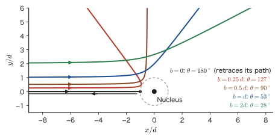
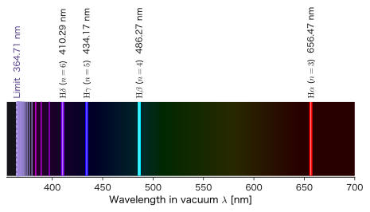
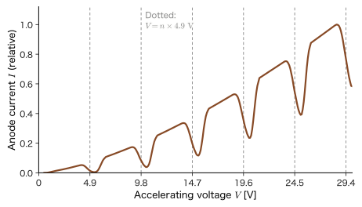
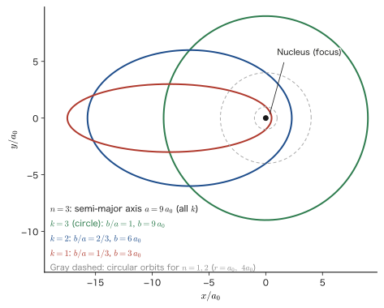
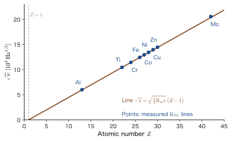

Chapter 5Atomic Structure and the Old Quantum Theory — Atomic Spectra and the Bohr Model
When a high voltage is applied to a glass tube filled with hydrogen gas, the tube glows a pale reddish purple. If we split this light with a prism or a diffraction grating, we see not a continuous band of colors like a rainbow but thin lines of red, blue-green, blue, and violet arranged at discrete positions (Figure 5.4). The yellow light of a sodium lamp consists of two lines near a wavelength of $589\ \mathrm{nm}$, and the main ultraviolet line emitted by the mercury inside a fluorescent lamp is at $253.7\ \mathrm{nm}$. In this way the light emitted by atoms is made up of lines of wavelengths fixed for each element, and it is used in elemental analysis as the “fingerprint of the atom.” Why is the light from atoms discrete? The first coherent answer to this question was Bohr's atomic model of 1913.
To understand the meaning of Bohr's theory, we first need to know what pictures of the atom existed before it and why they reached an impasse. When Rutherford discovered from α-particle scattering experiments that a very small atomic nucleus lies at the center of the atom, classical physics (AD 03, “Introductory University Physics”) implied that an electron circling the nucleus should emit electromagnetic waves, lose energy, and fall into the nucleus in about $10^{-11}\ \mathrm{s}$. Real atoms are stable for billions of years and, moreover, emit only light of definite colors. It was Bohr who tried to resolve this huge discrepancy using Planck's energy quantum (Chapter 3) and Einstein's photon (Chapter 4). Because Bohr's theory is one in which parts that use classical mechanics as it is coexist with parts to which a “quantum condition,” which classical mechanics cannot explain, has been added, please read it while telling, one line of the equations at a time, where classical physics ends and where quantum theory begins.
In this chapter we study, in order, the atomic models from Thomson to Rutherford and the scattering experiments; the spectral regularities discovered by Balmer and Rydberg; Bohr's theory (in which the radius, speed, and energy of the hydrogen atom are derived line by line) and the Franck–Hertz experiment that supported it; and then Sommerfeld's elliptical orbits, the correspondence principle, and Moseley's law, which developed Bohr's theory further. Finally, taking the helium atom as an example, we check numerically the limitations of the old quantum theory. These limitations lead on to de Broglie's matter waves in the next chapter, Chapter 6, and to the Schrödinger equation in Part III. The values $a_0=0.0529\ \mathrm{nm}$, $13.606\ \mathrm{eV}$, and $\alpha=1/137$ obtained here will continue to be used to the end of this book as the “yardsticks” of the atomic world.
- The differences among the atomic models of Thomson, Nagaoka, and Rutherford, and the logic by which the atomic nucleus was discovered from $\alpha$-particle scattering; deriving the relation between the distance of closest approach $d=2Ze_0^2/(4\pi\varepsilon_0K)$ and the scattering angle, and the Rutherford scattering formula
- Being able to estimate with the Larmor formula that a classical atom collapses in about $1.6\times10^{-11}\ \mathrm{s}$, and to state the difficulty of classical physics numerically
- Being able to calculate the wavelengths of the spectral series of hydrogen (Lyman, Balmer, Paschen) from the Balmer formula, the Rydberg formula, and the Ritz combination principle (including the difference between wavelengths in vacuum and in air)
- Being able to derive $r_n=n^2a_0$, $v_n=\alpha c/n$, $E_n=-13.606\ \mathrm{eV}/n^2$, and $R_\infty$ from Bohr's three assumptions, and to calculate the corrections due to the reduced mass (deuterium, $\mathrm{He^+}$, positronium, muonic hydrogen). Being able to explain the difference between the angular momentum $L=n\hbar$ of the Bohr model and $L=0$ of the 1s state in quantum mechanics
- Why the Franck–Hertz experiment is evidence for the reality of the energy levels of atoms, and the principle of the fluorescent lamp
- The Wilson–Sommerfeld quantum condition, Sommerfeld's elliptical orbits and the fine-structure constant $\alpha$, Bohr's correspondence principle, Moseley's law, and where the electron spin hypothesis and the Pauli exclusion principle fit in
- Being able to show numerically the limitations of the old quantum theory (the lack of internal consistency, the reconciliation with the wave nature of light, and many-electron atoms) through the ground-state energy of the helium atom ($-108.8\ \mathrm{eV}$ versus the measured $-79.0\ \mathrm{eV}$), and to explain the path toward wave mechanics
Source notes: Yasuhide Mochizuki, “Physics Notes: Quantum Mechanics 1,” p. 13.
5.1 The Evolution of Atomic Models — From Thomson to Rutherford
5.1.1 The discovery of the electron and Thomson's atomic model
Until around the end of the 19th century, the atom was regarded as the smallest unit of matter that cannot be divided any further (the word “atom” derives from a Greek word meaning “that which cannot be divided”). In 1897, however, J. J. Thomson performed an experiment in which the “cathode rays” emitted from the cathode in an evacuated glass tube were bent by electric and magnetic fields, and showed that cathode rays are a stream of very light, negatively charged particles. This particle is the electron. The ratio of charge to mass (the specific charge) $e_0/m_{\mathrm e}$, which is determined from how much the rays are bent, has the present-day value $1.7588\times10^{11}\ \mathrm{C/kg}$. This is about 1800 times the specific charge of the hydrogen ion (the proton); that is, the mass of the electron is about $1/1836$ that of the proton.
Since an atom is electrically neutral as a whole, if it contains negatively charged electrons, then the same amount of positive charge must also be present in the atom. In 1904 Thomson proposed a model in which electrons are embedded here and there in a sphere of positive charge spread uniformly over the size of the atom (radius $R\approx10^{-10}\ \mathrm{m}$). Likened to bread with raisins in it, it is called the plum pudding model. In this model, the electron is thought to oscillate about its equilibrium position inside the sphere of positive charge and to emit light at the frequency of that oscillation.
Derivation: The frequency of the electron in Thomson's model
Consider the case of a single electron, as in hydrogen. Consider an electron (charge $-e_0$) at a distance $r\lt R$ from the center of a positive charge $+e_0$ distributed uniformly in a sphere of radius $R$. By Gauss's law (AD 03, Chapter 35, Section 35.3 (in Japanese)), the electric field on the sphere of radius $r$ is determined only by the charge inside it, $e_0\,(r/R)^3$ (the charge is proportional to the volume); the field points outward from the center, and its magnitude is
$$ E(r)=\frac{1}{4\pi\varepsilon_0}\frac{e_0\,(r/R)^3}{r^2}=\frac{e_0\,r}{4\pi\varepsilon_0R^3} $$The force acting on the electron is $F=-e_0E(r)=-\dfrac{e_0^2}{4\pi\varepsilon_0R^3}\,r$, an attractive force proportional to the distance from the center (the form of Hooke's law). Therefore the electron performs simple harmonic motion with angular frequency
$$ \omega=\sqrt{\frac{e_0^2}{4\pi\varepsilon_0m_{\mathrm e}R^3}} $$(AD 03, Chapter 7, Section 7.1). Substituting $R=0.1\ \mathrm{nm}$ gives $\omega=1.6\times10^{16}\ \mathrm{s^{-1}}$, and the wavelength of the emitted light is $\lambda=2\pi c/\omega\approx118\ \mathrm{nm}$ (ultraviolet).
∎
The light that this model predicts has only one wavelength per electron, and moreover that wavelength is ultraviolet rather than visible. It cannot explain the four visible lines of hydrogen (Section 5.2), or the arrangement of the many other lines.
Around the same time, Hantaro Nagaoka of Japan, drawing an analogy with Saturn and its rings, announced the Saturnian model, in which many electrons revolve in ring-shaped arrangements around a large positive charge at the center (presented in a lecture in 1903, with an English-language paper in 1904). In that the electrons undergo orbital motion around the positive charge, it is close to Rutherford's later model.
5.1.2 The α-particle scattering experiment and the discovery of the atomic nucleus
Which of the two models is correct can be found out by shooting something into the interior of an atom and observing how it bounces back. What was used for this purpose is the $\alpha$ particle emitted by radioactive elements. The $\alpha$ particle is in fact the nucleus of helium, $\mathrm{He^{2+}}$ (charge $+2e_0$, mass about 7300 times that of the electron), and the kinetic energy $K$ of $\alpha$ particles emitted from radium and similar elements is about $5\sim9\ \mathrm{MeV}$ ($1\ \mathrm{MeV}=10^6\ \mathrm{eV}$). For $K=5.5\ \mathrm{MeV}$ the speed is $v=\sqrt{2K/m_\alpha}\approx1.6\times10^7\ \mathrm{m/s}$ (about 5% of the speed of light), and it is far heavier and faster than the electrons inside the atom.
In 1909, under Rutherford's direction, Geiger and Marsden directed $\alpha$ particles at thin metal foils such as gold, and counted the particles emerging on the far side and the near side of the foil as scintillations on a fluorescent screen coated with zinc sulfide, using a microscope. The results were as follows.
- Most of the $\alpha$ particles pass through the foil with hardly any bending.
- However, very rarely (one in ten thousand or fewer), some particles are bent through large angles exceeding 90°, and some are even almost bounced back.
The Thomson model cannot explain this result. Because the positive charge is spread thinly over the entire size of the atom, the force that an $\alpha$ particle receives from a single atom is small, and the deflection angle on passing through one atom is, even by the largest estimate, only about $3\times10^{-4}\ \mathrm{rad}$ (about $0.02^\circ$) for gold ($Z=79$, $R=0.14\ \mathrm{nm}$) (the estimate takes the magnitude of the force to be $2Ze_0^2/(4\pi\varepsilon_0R^2)$ and the duration of the force to be $2R/v$). The deflection due to collisions with electrons is smaller still (the mass of an electron is about 1/7300 that of an $\alpha$ particle, so the angle through which an $\alpha$ particle is bent in a collision with an electron at rest is at most only $m_{\mathrm e}/m_\alpha\approx1.4\times10^{-4}\ \mathrm{rad}$). Even if the particle passed through several thousand atoms in the foil and were bent a little each time in random directions, the probability that the total deflection exceeds 90° is almost zero.
In 1911 Rutherford showed that these observations can be explained if one assumes that “almost all of the positive charge and mass of the atom is concentrated in a very small region at the center of the atom”: an $\alpha$ particle is bent strongly in a single collision only when it passes very close to the nucleus. This small lump of positive charge is called the atomic nucleus. Its size is about one ten-thousandth of the radius of the atom (the radius of a gold nucleus is about $7\ \mathrm{fm}=7\times10^{-15}\ \mathrm{m}$), and the electrons move in the wide space around the nucleus. This is the Rutherford model of the atom (the atomic model with a nucleus).
5.1.3 Rutherford scattering — distance of closest approach and scattering angle
Let us check Rutherford's idea with equations. All we need is the motion of two positive charges that repel each other through the Coulomb force, so we can use the conservation of energy (Chapter 4, Section 4.2) and the conservation of angular momentum (Chapter 8, Section 8.1) that we learned in AD 03. Since the atomic nucleus (charge $+Ze_0$) is much heavier than the $\alpha$ particle (charge $+2e_0$, mass $m_\alpha$), we regard it as fixed at the origin. Letting $r$ be the distance between the $\alpha$ particle and the nucleus, the potential energy of the Coulomb force is
$$ U(r)=\frac{\kappa_\alpha}{r},\qquad \kappa_\alpha\equiv\frac{2Ze_0^2}{4\pi\varepsilon_0} $$Far away, $U=0$, and we take the kinetic energy of the $\alpha$ particle to be $K=\tfrac12m_\alpha v_0^2$.
Distance of closest approach
Suppose an $\alpha$ particle advances head-on toward a nucleus. As it approaches the nucleus it is decelerated by the repulsive force; at the point where its kinetic energy has been entirely converted into potential energy it stops for an instant, then turns around and goes back. The distance $d$ to the point where it stops is called the distance of closest approach. From the conservation of energy, $K=U(d)=\kappa_\alpha/d$, we obtain the following result.
Formula 5.1: Distance of closest approach in a head-on collision
When an $\alpha$ particle of kinetic energy $K$ approaches a nucleus of atomic number $Z$ head-on, the distance of closest approach is
\begin{equation} d=\frac{2Ze_0^2}{4\pi\varepsilon_0K} \label{eq:5-d} \end{equation}Using $e_0^2/(4\pi\varepsilon_0)=1.44\ \mathrm{MeV\,fm}$ ($=1.44\ \mathrm{eV\,nm}$) and expressing $K$ in units of $\mathrm{MeV}$, we obtain $d=2.88\,Z/K\ \mathrm{fm}$.
Example 5.1: Rutherford's distance of closest approach
Find the distance of closest approach $d$ when an $\alpha$ particle of kinetic energy $5.5\ \mathrm{MeV}$ collides head-on with the nucleus of gold ($Z=79$). Also find it for aluminum ($Z=13$), and compare the results with the radius of the nucleus (radius $R_{\mathrm N}\approx1.2\,A^{1/3}\ \mathrm{fm}$, where $A$ is the mass number; for gold, $A=197$).
Solution. Substitute $e_0^2/(4\pi\varepsilon_0)=1.44\ \mathrm{MeV\,fm}$ and $K=5.5\ \mathrm{MeV}$ into Eq. \eqref{eq:5-d}. For gold,
$$ d=\frac{2\times79\times1.44\ \mathrm{MeV\,fm}}{5.5\ \mathrm{MeV}}=\frac{227.5}{5.5}\ \mathrm{fm}=41.4\ \mathrm{fm} $$For aluminum, $d=\dfrac{2\times13\times1.44}{5.5}\ \mathrm{fm}=6.8\ \mathrm{fm}$. The radius of the gold nucleus is $R_{\mathrm N}\approx1.2\times197^{1/3}\ \mathrm{fm}=1.2\times5.82\ \mathrm{fm}=7.0\ \mathrm{fm}$, so $d=41.4\ \mathrm{fm}$ is about six times the radius of the nucleus, and the $\alpha$ particle turns back before it touches the nucleus. Therefore the scattering by gold is determined by the Coulomb force alone, and Rutherford's formula, which we derive next, holds as it stands. For aluminum, on the other hand, the radius of the nucleus is $1.2\times27^{1/3}\ \mathrm{fm}=3.6\ \mathrm{fm}$ and the radius of the $\alpha$ particle is $1.2\times4^{1/3}\ \mathrm{fm}=1.9\ \mathrm{fm}$, and the sum of the two, $5.5\ \mathrm{fm}$, is close to $d=6.8\ \mathrm{fm}$. The surfaces of the two nuclei are about $1.3\ \mathrm{fm}$ apart, but considering the range over which the nuclear force acts (about $1\sim2\ \mathrm{fm}$), an $\alpha$ particle of $5.5\ \mathrm{MeV}$ in a head-on collision gets as close as the distance at which the nuclear force acts. For this reason, deviations from Rutherford's formula, which is determined by the Coulomb force alone, appear for light nuclei.
Scattering angle and impact parameter
Let us consider the general case in which the collision is not head-on. The distance between the nucleus and the straight line along which the $\alpha$ particle is incident is called the impact parameter $b$, and the angle through which the direction of motion after scattering is bent away from the incident direction is called the scattering angle $\theta$. The case $b=0$ is the head-on collision ($\theta=180^\circ$).
Formula 5.2: Impact parameter and scattering angle
\begin{equation} \tan\frac{\theta}{2}=\frac{d}{2b}\qquad\Longleftrightarrow\qquad b=\frac{d}{2}\cot\frac{\theta}{2} \label{eq:5-tan} \end{equation}Here $d$ is the distance of closest approach in Eq. \eqref{eq:5-d}. The closer the particle passes to the nucleus (the smaller $b$ is), the more strongly it is deflected, and for $b=d/2$ we have $\theta=90^\circ$.
Derivation: Formula for the scattering angle
Fix the nucleus at the origin, and suppose the $\alpha$ particle is incident from far away with speed $v_0$ and impact parameter $b$. Since the motion is governed by the Coulomb force alone, two conservation laws hold:
- Energy: $\tfrac12mv^2+\dfrac{\kappa_\alpha}{r}=\tfrac12mv_0^2=K$ ($m=m_\alpha$)
- Angular momentum: $L=mv_0b=mr^2\dot{\varphi}$ ($\varphi$ is the polar angle about the origin; the first equality gives the value far from the nucleus)
The trajectory is symmetric about the straight line (the axis of symmetry) connecting the nucleus and the point of closest approach (because the equation of motion does not change when the direction of time is reversed). We take the direction of this axis of symmetry as the $x'$ axis (positive from the nucleus toward the point of closest approach) and express the position of a point on the trajectory by the polar angle $\varphi$. The distant part of the trajectory on the incoming side lies in the direction $\varphi=-\varphi_0$, and the distant part on the outgoing side lies in the direction $\varphi=+\varphi_0$. Since the velocity before the scattering points toward the nucleus and the velocity after the scattering points away from the nucleus, the $x'$ component of the velocity is $-v_0\cos\varphi_0$ before and $+v_0\cos\varphi_0$ after the scattering, so the change in the $x'$ component of the momentum is
$$ \Delta p_{x'}=2mv_0\cos\varphi_0\qquad(\ast) $$The scattering angle is $\theta=\pi-2\varphi_0$, so $\cos\varphi_0=\sin(\theta/2)$.
On the other hand, the change in momentum equals the impulse. The force points away from the nucleus with magnitude $\kappa_\alpha/r^2$, and its $x'$ component is $(\kappa_\alpha/r^2)\cos\varphi$. Using $\dd t=\dfrac{mr^2}{L}\dd\varphi$ (conservation of angular momentum) to convert the time integral into an integral over the angle, we have
$$ \Delta p_{x'}=\int\frac{\kappa_\alpha}{r^2}\cos\varphi\,\dd t=\frac{\kappa_\alpha m}{L}\int_{-\varphi_0}^{\varphi_0}\cos\varphi\,\dd\varphi=\frac{2\kappa_\alpha m}{L}\sin\varphi_0\qquad(\ast\ast) $$(The key point is that $r^2$ cancels.) Setting $(\ast)$ equal to $(\ast\ast)$ and substituting $L=mv_0b$, we obtain
$$ 2mv_0\cos\varphi_0=\frac{2\kappa_\alpha m}{mv_0b}\sin\varphi_0\quad\Longrightarrow\quad\tan\varphi_0=\frac{mv_0^2\,b}{\kappa_\alpha}=\frac{2Kb}{\kappa_\alpha}=\frac{2b}{d} $$(here we used $d=\kappa_\alpha/K$). Since $\varphi_0=\dfrac{\pi-\theta}{2}$ gives $\tan\varphi_0=\cot\dfrac{\theta}{2}$, we have $\cot\dfrac{\theta}{2}=\dfrac{2b}{d}$, that is, $\tan\dfrac{\theta}{2}=\dfrac{d}{2b}$.
∎
To check this formula, Figure 5.2 shows trajectories obtained by actually solving the equation of motion numerically.

Rutherford scattering formula
What we count in an experiment is how many particles are scattered in which direction. Using the cross section $\sigma$ of the stream of incident particles, we express this as “how much area of the incident beam the particles scattered into a given range of scattering angles come from”; this is the differential cross section $\dd\sigma/\dd\Omega$ ($\dd\Omega=2\pi\sin\theta\,\dd\theta$ is the solid angle corresponding to the ring between the angles $\theta$ and $\theta+\dd\theta$). (The cross section $\sigma$ is a quantity different from the Stefan–Boltzmann constant $\sigma_{\mathrm{SB}}$ and from the width $\sigma$ of a wave packet.) Particles whose impact parameter lies between $b$ and $b+\dd b$ come through a ring of radius $b$ and width $\dd b$ (area $2\pi b\,\dd b$) and fall into the width $\dd\theta$ around the scattering angle $\theta$. Therefore
$$ \frac{\dd\sigma}{\dd\Omega}=\frac{2\pi b\,\abs{\dd b}}{2\pi\sin\theta\,\abs{\dd\theta}}=\frac{b}{\sin\theta}\left|\diff{b}{\theta}\right| $$Differentiating $b=\dfrac{d}{2}\cot\dfrac{\theta}{2}$ of Eq. \eqref{eq:5-tan} with respect to $\theta$ gives $\diff{b}{\theta}=-\dfrac{d}{4}\dfrac{1}{\sin^2(\theta/2)}$, so using $\sin\theta=2\sin\dfrac{\theta}{2}\cos\dfrac{\theta}{2}$ we find
$$ \frac{\dd\sigma}{\dd\Omega}=\frac{1}{2\sin\frac{\theta}{2}\cos\frac{\theta}{2}}\cdot\frac{d}{2}\frac{\cos\frac{\theta}{2}}{\sin\frac{\theta}{2}}\cdot\frac{d}{4}\frac{1}{\sin^2\frac{\theta}{2}}=\frac{d^2}{16}\frac{1}{\sin^4\frac{\theta}{2}} $$This is the result.
Formula 5.3: Rutherford scattering formula
\begin{equation} \frac{\dd\sigma}{\dd\Omega}=\left(\frac{d}{4}\right)^2\frac{1}{\sin^4(\theta/2)}=\left(\frac{Ze_0^2}{4\pi\varepsilon_0\cdot2K}\right)^2\frac{1}{\sin^4(\theta/2)} \label{eq:5-ruth} \end{equation}The dependence $1/\sin^4(\theta/2)$ grows rapidly at small angles. For example, in scattering by gold, scattering at $\theta=10^\circ$ is about 4300 times more frequent than at $90^\circ$. In 1913, Geiger and Marsden confirmed that the dependence on the scattering angle, the thickness of the foil, the speed of the $\alpha$ particles, and the type of element the foil is made of agrees with Eq. \eqref{eq:5-ruth}, and thereby established Rutherford's nuclear model. The value at $90^\circ$ is $\dd\sigma/\dd\Omega=d^2/4=(41.4\ \mathrm{fm})^2/4=428\ \mathrm{fm^2}=4.3\ \mathrm{b}$ (barn, $1\ \mathrm{b}=10^{-28}\ \mathrm{m^2}=100\ \mathrm{fm^2}$)$/\mathrm{sr}$.
5.1.4 Difficulties of the classical atom
While Rutherford's model agreed well with experiment, it had a serious contradiction with classical physics. Let us check this for the hydrogen atom. Suppose that an electron (mass $m_{\mathrm e}$, charge $-e_0$) goes around a proton in a circular orbit of radius $r$. Since the central force (the Coulomb force) provides the centripetal force, we have
$$ \frac{m_{\mathrm e}v^2}{r}=\frac{e_0^2}{4\pi\varepsilon_0r^2} $$The kinetic energy is $\tfrac12m_{\mathrm e}v^2=\dfrac{e_0^2}{8\pi\varepsilon_0r}$ and the potential energy is $-\dfrac{e_0^2}{4\pi\varepsilon_0r}$, so the total energy is
$$ E=\frac{e_0^2}{8\pi\varepsilon_0r}-\frac{e_0^2}{4\pi\varepsilon_0r}=-\frac{e_0^2}{8\pi\varepsilon_0r} $$(This has the same form as the energy of planetary motion in AD 03, Chapter 8, Section 8.4; the smaller the radius, the lower the energy.) Up to this point, everything is pure classical mechanics.
According to electromagnetism (AD 03, Chapter 42, Section 42.3 (in Japanese)), however, an accelerated charge radiates electromagnetic waves. An electron in circular motion has the centripetal acceleration $a=v^2/r$, so it keeps emitting electromagnetic waves. For nonrelativistic motion ($v\ll c$), the radiated power (energy per unit time) is determined only by the magnitude $a$ of the acceleration and is given by the Larmor formula:
\begin{equation} P=\frac{e_0^2a^2}{6\pi\varepsilon_0c^3} \label{eq:5-larmor} \end{equation}This formula is a result of electromagnetism, and here we accept it and use it. We only sketch why $P\propto e_0^2a^2$. The electric field of the radiation that an accelerated charge creates far away is proportional to the acceleration $a$ and to the charge $e_0$. Since the power per unit area carried by an electromagnetic wave is proportional to the square of the electric field, the total power is proportional to $e_0^2a^2$. The proportionality coefficient $1/(6\pi\varepsilon_0c^3)$ is determined by adding up over the whole sphere the power obtained from the electric field of the radiation. (The dimension is $[\mathrm{C^2\,m^2\,s^{-4}}]/[\mathrm{C^2\,N^{-1}m^{-2}\cdot m^3\,s^{-3}}]=\mathrm{N\,m\,s^{-1}}=\mathrm{J/s}$, which is that of power.) The electron loses energy at this rate, so the orbit radius gradually decreases. Let us estimate how long it takes for the electron to fall into the nucleus.
Derivation: Time for a classical atom to collapse
When the orbit radius is $r$, the acceleration is $a=\dfrac{e_0^2}{4\pi\varepsilon_0m_{\mathrm e}r^2}$. We insert this into Eq. \eqref{eq:5-larmor}. In what follows we abbreviate $\mathcal{C}\equiv\dfrac{e_0^2}{4\pi\varepsilon_0}$ ($a=\mathcal{C}/(m_{\mathrm e}r^2)$, $\dfrac{e_0^2}{6\pi\varepsilon_0}=\dfrac23\mathcal{C}$):
$$ P=\frac23\mathcal{C}\frac{a^2}{c^3}=\frac23\frac{\mathcal{C}^3}{m_{\mathrm e}^2c^3}\frac{1}{r^4} $$The rate of decrease of the energy equals the radiated power, so $\dfrac{\dd E}{\dd t}=-P$. From $E=-\dfrac{\mathcal{C}}{2r}$ we have $\dfrac{\dd E}{\dd t}=\dfrac{\mathcal{C}}{2r^2}\dfrac{\dd r}{\dd t}$, so
$$ \frac{\mathcal{C}}{2r^2}\frac{\dd r}{\dd t}=-\frac23\frac{\mathcal{C}^3}{m_{\mathrm e}^2c^3}\frac{1}{r^4} \quad\Longrightarrow\quad r^2\frac{\dd r}{\dd t}=-\frac43\frac{\mathcal{C}^2}{m_{\mathrm e}^2c^3} $$Since the left-hand side is $\dfrac13\dfrac{\dd(r^3)}{\dd t}$, we get $\dfrac{\dd(r^3)}{\dd t}=-\dfrac{4\mathcal{C}^2}{m_{\mathrm e}^2c^3}$, and the right-hand side is a constant independent of time. The time $t_{\mathrm c}$ for the radius to go from $r_0$ to $0$ is found by integrating both sides from $0$ to $t_{\mathrm c}$, which gives $0-r_0^3=-\dfrac{4\mathcal{C}^2}{m_{\mathrm e}^2c^3}\,t_{\mathrm c}$, that is,
$$ t_{\mathrm c}=\frac{m_{\mathrm e}^2c^3\,r_0^3}{4\mathcal{C}^2} $$Using the classical electron radius $r_{\mathrm e}\equiv\dfrac{\mathcal{C}}{m_{\mathrm e}c^2}=\dfrac{e_0^2}{4\pi\varepsilon_0m_{\mathrm e}c^2}=2.818\ \mathrm{fm}$, we have $\dfrac{\mathcal{C}^2}{m_{\mathrm e}^2c^3}=r_{\mathrm e}^2c$, so
\begin{equation} t_{\mathrm c}=\frac{r_0^3}{4r_{\mathrm e}^2c} \label{eq:5-collapse} \end{equation}∎
Example 5.2: Lifetime of a classical hydrogen atom
Suppose that the electron of a hydrogen atom is initially going around in a circular orbit of radius $r_0=a_0=0.0529\ \mathrm{nm}$. Find the collapse time $t_{\mathrm c}$ predicted by classical physics. Also, how many times does the electron go around the nucleus during that time?
Solution. Substituting $r_0=5.29\times10^{-11}\ \mathrm{m}$, $r_{\mathrm e}=2.818\times10^{-15}\ \mathrm{m}$, and $c=2.998\times10^8\ \mathrm{m/s}$ into Eq. \eqref{eq:5-collapse} gives
$$ t_{\mathrm c}=\frac{(5.29\times10^{-11})^3}{4\times(2.818\times10^{-15})^2\times2.998\times10^8}\ \mathrm{s}=\frac{1.48\times10^{-31}}{9.52\times10^{-21}}\ \mathrm{s}=1.56\times10^{-11}\ \mathrm{s} $$The speed in the orbit of radius $a_0$ follows from the centripetal-force equation $m_{\mathrm e}v^2/r=\mathcal{C}/r^2$ as $v=\sqrt{\mathcal{C}/(m_{\mathrm e}a_0)}=2.19\times10^6\ \mathrm{m/s}$ (which is $0.73\ \%$ of the speed of light, so the Larmor formula is applicable), and the period is $T=2\pi a_0/v=1.52\times10^{-16}\ \mathrm{s}$, so before the collapse the electron makes about $t_{\mathrm c}/T\approx1.0\times10^5$ revolutions.
Conclusion: according to classical physics, a hydrogen atom would collapse in about $10^{-11}\ \mathrm{s}$, that is, in roughly one ten-billionth of a second. Real atoms do not collapse even after billions of years, so this is a serious breakdown of classical physics.
Another difficulty is the nature of the emitted light. As the orbit radius decreases continuously, the rotation frequency of the electron also changes continuously, and the frequency of the radiated electromagnetic wave changes continuously along with it. That is, the spectrum predicted by classical physics is not a set of discrete lines but a continuous spectrum. The spectrum of a real atom consists of lines of definite wavelengths (Section 5.2), and this too cannot be explained by classical physics.
Discussion: The second breakdown of classical physics
The two facts that “atoms are stable” and that “atoms emit line spectra” lead to unavoidable contradictions when classical mechanics and electromagnetism are applied to Rutherford's model of the atom with a nucleus. In Chapter 3, we saw that in blackbody radiation classical physics (the Rayleigh–Jeans formula) breaks down in the ultraviolet region and can be rescued only by Planck's energy quantum. In the structure of the atom, too, classical physics breaks down again. It is Bohr's theory in Section 5.3 that interpreted the experimental rules of Balmer and others, which we will see in the next section, and brought Planck's idea of the quantum into the atom.
5.2 Atomic Spectra — The Balmer and Rydberg Formulas
5.2.1 Line spectra and spectroscopy
In the 17th century, Newton showed that when sunlight is passed through a prism it splits into the seven colors of the rainbow (a spectrum). In the 19th century, the spectroscope, which separates light that has passed through a slit by means of a prism or a diffraction grating (AD 03, Chapter 16, Section 16.3: for a grating with lattice constant $d_{\mathrm g}$, light of wavelength $\lambda$ interferes constructively in the direction $d_{\mathrm g}\sin\theta=m\lambda$), was developed, and it became possible to measure the wavelength of light precisely.
In 1814, Fraunhofer studied in detail the many dark lines (Fraunhofer lines) that run through the continuous band of colors in the Sun's spectrum. In 1859, Kirchhoff and Bunsen found that the bright yellow line emitted when sodium is put into a flame lies at the same wavelength as a dark line (the D line) in the Sun's spectrum, and they established the following principles.
- Atoms of a hot gas emit only light of wavelengths characteristic of each element (emission line spectrum).
- When light with a continuous spectrum passes through atoms of the same element, they absorb only light of the same wavelengths (absorption spectrum; this is what the Fraunhofer lines actually are).
As a result, merely by analyzing the light of the distant Sun and stars, it became possible to tell which elements are present there. Cesium and rubidium are elements that were discovered as new lines in a spectrum, and helium (named after Helios, the sun god) was discovered first, in 1868, as an unknown yellow line in the Sun's spectrum.
The fact that lines of definite wavelengths appear for each element strongly suggested that the interior of an atom has some definite discrete states. In the latter half of the 19th century, attempts were made to express the wavelengths of the lines of the simplest atom, the hydrogen atom, by a rule.
5.2.2 The Balmer formula (1885)
In 1885, the Swiss mathematics teacher Balmer found that the wavelengths of the four lines of hydrogen in the visible region (the measured wavelength values were obtained by Ångström and others) can be expressed, for $n=3,4,5,6$, by the simple formula
\begin{equation} \lambda=B\,\frac{n^2}{n^2-4}\qquad(B=364.56\ \mathrm{nm};\ n=3,4,5,\dots) \label{eq:5-balmer} \end{equation}In order from $n=3$, this gives $656.21,\ 486.08,\ 434.00,\ 410.13\ \mathrm{nm}$, which agree with the currently known values (wavelengths in air $656.28,\ 486.13,\ 434.05,\ 410.17\ \mathrm{nm}$) to a relative error of about one part in ten thousand. The Balmer formula also predicted the existence of lines in the near-ultraviolet corresponding to $n=7,8,\dots$ (in vacuum, the line for $n=7$ is at $397\ \mathrm{nm}$; the wavelength becomes shorter than $380\ \mathrm{nm}$ for $n\ge10$), and it was subsequently confirmed that these agree well with lines that had been found in the spectra of stars and elsewhere. As $n\to\infty$ the wavelength approaches $B=364.56\ \mathrm{nm}$, and the spacing of the lines gradually narrows so that they accumulate at the end of the series (the series limit).
If we rewrite Eq. \eqref{eq:5-balmer} as an equation for the reciprocal of the wavelength (the wavenumber) $\tilde\nu\equiv1/\lambda$, we obtain $\dfrac1\lambda=\dfrac{n^2-4}{Bn^2}=\dfrac4B\left(\dfrac14-\dfrac1{n^2}\right)$; that is, it takes the form
$$ \frac1\lambda=R\left(\frac{1}{2^2}-\frac{1}{n^2}\right),\qquad R=\frac4B=1.097\times10^7\ \mathrm{m^{-1}} $$The mysterious constant $B$ has been replaced by the more readable constant $R$, and the structure of “the difference of the reciprocals of $2^2$ and $n^2$” now stands out clearly.
5.2.3 The Rydberg formula and the Ritz combination principle
In 1888, Rydberg generalized the Balmer formula and organized it into a formula that covers all the lines of hydrogen (not only the visible ones).
Law 5.1: The Rydberg formula
The wavelength $\lambda$ of a line in the line spectrum of hydrogen is given, using two positive integers $m\lt n$, by
\begin{equation} \frac1\lambda=R\left(\frac{1}{m^2}-\frac{1}{n^2}\right)\qquad(m=1,2,3,\dots;\ n=m+1,m+2,\dots) \label{eq:5-rydberg} \end{equation}Here $R$ is a constant called the Rydberg constant; for hydrogen it is $R_{\mathrm H}=1.096\,776\times10^7\ \mathrm{m^{-1}}$. A group of lines obtained by fixing $m$ and varying $n$ is called a series.
This formula means that the wavenumber of a hydrogen line is expressed as a difference of numbers $T_n\equiv R/n^2$ (terms), $\tilde\nu=T_m-T_n$. In 1908, Ritz extended this to the spectra of atoms in general and presented the following empirical law.
Law 5.2: The Ritz combination principle (1908)
The wavenumber of a line in the spectrum of an atom is expressed as a difference $\tilde\nu=T_m-T_n$ of terms $T_1,T_2,T_3,\dots$ characteristic of that atom. The sum or difference of the wavenumbers of two lines is likewise the wavenumber of some other line (if there is one).
For example, in hydrogen the line from $n=3$ to $n=1$ (Lyman $\beta$) can be decomposed as $T_1-T_3=(T_1-T_2)+(T_2-T_3)$, so its wavenumber is the sum of the wavenumbers of Lyman $\alpha$ ($T_1-T_2$) and Balmer $\mathrm H\alpha$ ($T_2-T_3$). This rule that “the wavenumber of a line is a difference of terms” became the most important hint for Bohr's theory. The reason is that if each term is multiplied by $hc$, it has the dimension of energy, and one can read the rule as saying that a difference of the wavenumbers of lines corresponds to a difference of energies (Section 5.3).
The series corresponding to $m=1,2,3,\dots$ in the Rydberg formula are called by the names of their discoverers, as shown in the following table. The wavelengths in the table are values in vacuum calculated from Eq. \eqref{eq:5-rydberg} using the Rydberg constant $R_{\mathrm H}$ for the hydrogen atom.
| Series | $m$ (lower level) | Region | First line ($n=m+1$) | Series limit ($n\to\infty$) | Discovered (year) |
|---|---|---|---|---|---|
| Lyman | 1 | Vacuum ultraviolet | $121.57\ \mathrm{nm}$ (Ly$\alpha$) | $91.18\ \mathrm{nm}$ | Lyman (1906–14) |
| Balmer | 2 | Visible to near-ultraviolet | $656.47\ \mathrm{nm}$ (H$\alpha$) | $364.71\ \mathrm{nm}$ | Balmer (1885) |
| Paschen | 3 | Near-infrared | $1875.63\ \mathrm{nm}$ | $820.59\ \mathrm{nm}$ | Paschen (1908) |
| Brackett | 4 | Infrared | $4052.28\ \mathrm{nm}$ | $1458.82\ \mathrm{nm}$ | Brackett (1922) |
| Pfund | 5 | Infrared | $7459.88\ \mathrm{nm}$ | $2279.41\ \mathrm{nm}$ | Pfund (1924) |
Figure 5.3 is a diagram of the individual series. We multiplied the terms $T_n=R/n^2$ by $hc$ to define levels $E_n=-hcR/n^2$, arranged them at heights corresponding to their energies, and drew the lines as arrows between levels. (That the value of this $E_n$ is $-13.606\ \mathrm{eV}/n^2$ will be derived from Bohr's theory in Section 5.3.)
5.2.4 Wavelength in vacuum and wavelength in air
There is one point to note when reading values of the wavelength. The wavelength of light changes with the medium through which the light travels. The frequency $\nu$ does not change, but the speed of light in a medium is $1/n_{\mathrm r}$ times the speed $c$ in vacuum, so the wavelength becomes $\lambda=\lambda_{\mathrm{vac}}/n_{\mathrm r}$ ($n_{\mathrm r}$ is the refractive index). The refractive index of air is about $n_{\mathrm r}=1.000277$ (visible light, standard atmosphere), so the wavelength in air is about $0.028\ \%$ shorter than the wavelength in vacuum. For $\mathrm H\alpha$, $656.47\ \mathrm{nm}$ (vacuum) becomes about $656.3\ \mathrm{nm}$ (in air). In the literature on visible-light spectroscopy, wavelengths are often given as values in air (the vacuum ultraviolet region, with wavelengths of $200\ \mathrm{nm}$ or less, is measured in vacuum because air absorbs light there, and the wavelengths in vacuum are given). When wavelengths are to be connected with energies or frequencies, as in Bohr's theory, we must use the wavelength in vacuum (or the wavenumber or the frequency), which does not depend on the medium.
| Line | Transition | In vacuum (Eq. \eqref{eq:5-rydberg}, $R_{\mathrm H}$) | In air (measured value) | Balmer formula \eqref{eq:5-balmer} | Color |
|---|---|---|---|---|---|
| H$\alpha$ | $3\to2$ | 656.47 | 656.28 | 656.21 | red |
| H$\beta$ | $4\to2$ | 486.27 | 486.13 | 486.08 | blue-green |
| H$\gamma$ | $5\to2$ | 434.17 | 434.05 | 434.00 | blue |
| H$\delta$ | $6\to2$ | 410.29 | 410.17 | 410.13 | violet |

Example 5.3: Wavelengths of the Balmer series
From $R_{\mathrm H}=1.096\,776\times10^7\ \mathrm{m^{-1}}$, find the wavelengths in vacuum of H$\alpha$, H$\beta$, H$\gamma$, and H$\delta$ of the Balmer series, and the wavelength of the series limit. Also find the wavelength of H$\alpha$ in air, using the refractive index of air, $1.000277$.
Solution. Setting $m=2$ in Eq. \eqref{eq:5-rydberg} gives $\dfrac1\lambda=R_{\mathrm H}\left(\dfrac14-\dfrac1{n^2}\right)$.
- $n=3$ (H$\alpha$): $\dfrac14-\dfrac19=\dfrac{5}{36}=0.138\,889$, and $\dfrac1\lambda=1.096\,776\times10^7\times0.138\,889=1.5233\times10^6\ \mathrm{m^{-1}}$, hence $\lambda=6.5647\times10^{-7}\ \mathrm{m}=656.47\ \mathrm{nm}$.
- $n=4$ (H$\beta$): $\dfrac14-\dfrac1{16}=\dfrac{3}{16}=0.1875$, and $\dfrac1\lambda=2.0565\times10^6\ \mathrm{m^{-1}}$, hence $\lambda=486.27\ \mathrm{nm}$.
- $n=5$ (H$\gamma$): $\dfrac14-\dfrac1{25}=\dfrac{21}{100}=0.21$, and $\dfrac1\lambda=2.3032\times10^6\ \mathrm{m^{-1}}$, hence $\lambda=434.17\ \mathrm{nm}$.
- $n=6$ (H$\delta$): $\dfrac14-\dfrac1{36}=\dfrac{2}{9}=0.2222$, and $\dfrac1\lambda=2.4373\times10^6\ \mathrm{m^{-1}}$, hence $\lambda=410.29\ \mathrm{nm}$.
- Series limit ($n\to\infty$): $\dfrac1\lambda=\dfrac{R_{\mathrm H}}{4}=2.7419\times10^6\ \mathrm{m^{-1}}$, hence $\lambda=4/R_{\mathrm H}=364.71\ \mathrm{nm}$.
For H$\alpha$ in air, $\lambda_{\mathrm{air}}=656.47\ \mathrm{nm}/1.000277=656.29\ \mathrm{nm}$ (this agrees with the measured value $656.28\ \mathrm{nm}$ in Table 5.2 to within 0.01 nm). The spacing between the lines narrows rapidly: $656.47-486.27=170.2\ \mathrm{nm}$, $486.27-434.17=52.1\ \mathrm{nm}$, and $434.17-410.29=23.9\ \mathrm{nm}$.
Example 5.4: The Lyman $\alpha$ line and the series limit
Find the wavelength and photon energy of the first line Ly$\alpha$ ($2\to1$) of the Lyman series of hydrogen, and the wavelength and energy of the series limit. In which region does this light lie?
Solution. Setting $m=1$ in Eq. \eqref{eq:5-rydberg} gives $\dfrac1\lambda=R_{\mathrm H}\left(1-\dfrac1{n^2}\right)$. For Ly$\alpha$, $n=2$, so $\dfrac1\lambda=\dfrac34R_{\mathrm H}=8.2258\times10^6\ \mathrm{m^{-1}}$ and $\lambda=121.57\ \mathrm{nm}$. The photon energy is $E=hc/\lambda=\dfrac{1239.84\ \mathrm{eV\,nm}}{121.57\ \mathrm{nm}}=10.20\ \mathrm{eV}$. For the series limit, $n\to\infty$ gives $\dfrac1\lambda=R_{\mathrm H}$, $\lambda=1/R_{\mathrm H}=91.18\ \mathrm{nm}$, and $E=1239.84/91.18=13.60\ \mathrm{eV}$.
Visible light has wavelengths of about $380\sim780\ \mathrm{nm}$, so the Lyman series lies entirely in the ultraviolet (indeed in the vacuum ultraviolet, at $200\ \mathrm{nm}$ or less). Oxygen and other constituents of air absorb light in this region, so the apparatus is evacuated for the measurement. The series limit, $13.60\ \mathrm{eV}$, equals the ionization energy of the hydrogen atom (the energy required to pull the ground-state electron away from the atom). This gives us a clue to the meaning of the “energy” expressed as a difference of terms (Section 5.3).
5.2.5 Applications of spectroscopy
Application: Analytical techniques that use the atomic “fingerprint”
The line spectrum of an atom is a basic tool of elemental analysis. Here are some familiar examples and some analytical methods for materials.
- Flame test: when a salt of a metal is put into a flame, sodium looks yellow (the D lines at $589.0\ \mathrm{nm}$ and $589.6\ \mathrm{nm}$; the photon energies are $2.105\ \mathrm{eV}$ and $2.103\ \mathrm{eV}$) and lithium looks red ($670.8\ \mathrm{nm}$, $1.85\ \mathrm{eV}$). The colors of fireworks are likewise the colors of the emission lines of the added metals. A low-pressure sodium lamp (used for lighting tunnels) emits almost nothing but this yellow D line.
- Atomic absorption spectrometry and ICP optical emission spectrometry: the sample is heated to a high temperature to turn it into atoms; the kind of element is determined from the wavelengths of the lines that it absorbs or emits, and the amount from their intensities. These methods are widely used to determine trace elements in metals, ceramics, and water.
- Astronomical spectroscopy: the composition of a star can be found from the absorption lines in its light, and the motion of stars and galaxies is measured from the shift in the wavelength of the H$\alpha$ line (the Doppler effect, and the redshift due to the expansion of the universe).
- Fluorescent lamp: it makes use of the $253.7\ \mathrm{nm}$ line of the mercury atom (Section 5.4).
5.3 The Bohr Model of the Atom (1913)
5.3.1 The beginnings of the quantum theory of atomic structure and the three assumptions
The progress of the quantum theory of atomic structure
The quantum theory of atomic structure began with Bohr's theory, proposed in 1913. By the mid-1920s this theory had developed remarkably through the Bohr–Sommerfeld quantum condition (Sections 5.5.1 and 5.5.2) and the electron spin hypothesis and the Pauli exclusion principle (Section 5.5.5). However, the theory had several defects and ambiguities and was not coherent as a theory (Section 5.6). Then, in the late 1920s, de Broglie's matter-wave theory, Schrödinger's wave mechanics, and Heisenberg's matrix mechanics appeared, and the quantum theory of atomic structure was completed. This chapter deals with its first stage—Bohr's theory and its development.
Niels Bohr of Denmark, drawing on his experience of staying in Rutherford's laboratory, announced in 1913 a theory that simultaneously resolved the two difficulties seen in the preceding sections (the stability of the atom and the regularities of line spectra). His approach was to accept part of classical physics (circular motion under the Coulomb force), to discard two points that classical physics predicts (a circulating electron emits light and loses energy; the frequency of the radiation equals the frequency of the electron's revolution), and instead to introduce the idea of “discrete states,” similar to Planck's quantum (Chapter 3) and Einstein's photon (Chapter 4). It can be summarized in the following three assumptions.
Axiom 5.1: Stationary states
Of the circular motions of classical mechanics with the Coulomb force as the centripetal force, an electron in an atom can occupy only certain special orbits (stationary states). While in a stationary state, contrary to the prediction of classical electromagnetism, it emits no electromagnetic waves, and its energy $E_n$ ($n$ is the quantum number introduced in Axiom 5.3) is constant.
Axiom 5.2: Frequency condition
When an electron moves from a stationary state of energy $E_n$ to a stationary state of lower energy $E_m$ (a quantum jump), it emits the energy difference as a single photon of frequency $\nu$:
\begin{equation} h\nu=E_n-E_m\qquad(n\gt m,\ E_n\gt E_m) \label{eq:5-freq} \end{equation}Conversely, when a photon of this frequency is absorbed, the electron moves from the state $E_m$ to the state $E_n$. (The lower level is denoted $m$ and the upper level $n$, matching the Rydberg formula (Law 5.1).)
Axiom 5.3: Quantum condition for angular momentum
The orbits of stationary states are limited to those for which the angular momentum of the electron, $L=m_{\mathrm e}vr$, is an integer multiple of $\hbar=h/2\pi$:
\begin{equation} L=m_{\mathrm e}vr=n\hbar\qquad(n=1,2,3,\dots) \label{eq:5-quant} \end{equation}Here $h$ is the Planck constant (Chapter 3), and $n$ is called the quantum number (principal quantum number).
The left-hand side of Axiom 5.2 is precisely the photon energy (the Planck–Einstein relation, Chapter 4, Section 4.4):
$$ E_{\mathrm{ph}}=h\nu=\hbar\omega,\qquad p_{\mathrm{ph}}=\frac{h}{\lambda}=\hbar k\qquad\left(\omega=2\pi\nu,\ k=\frac{2\pi}{\lambda}\right) $$Here $\omega$ is the angular frequency and $k$ is the wavenumber. For a massless photon $E=pc$, so the momentum is $p_{\mathrm{ph}}=h\nu/c=h/\lambda=\hbar k$, which becomes important in Section 5.6 and Chapter 6. Also, combining Axiom 5.2 with the Rydberg formula (Law 5.1) and the Ritz combination principle (Law 5.2) shows that the energy of a level must have the form $E_n=-hcR/n^2$. This is because the wavenumber difference $\tilde\nu=T_m-T_n$ multiplied by $hc$ is the energy difference. Bohr's goal was to derive this $E_n$ from the quantum condition (Axiom 5.3) and classical mechanics alone, and even to predict the value of the Rydberg constant $R$.
Intuition: What the three assumptions discard and what they keep
Let us sort out how the three assumptions are positioned.
- The part of classical physics used as it is: the electron moves in a circle around the proton under the Coulomb force (Newton's equation of motion).
- The part of classical physics discarded: the conclusion of electromagnetism that a charge in circular motion emits electromagnetic waves and loses energy (Axiom 5.1), and the conclusion that the frequency of the radiation equals the frequency of the electron's revolution (Axiom 5.2).
- The part where quantum theory is introduced: the orbits are limited to those whose angular momentum is an integer multiple of $\hbar$ (Axiom 5.3), and an energy difference corresponds to $h\nu$ of a single photon (Axiom 5.2).
The quantum condition Bohr first used was not about the angular momentum but about the relation $T=\tfrac12nhf$ between the kinetic energy $T$ of the electron and the number of revolutions per unit time around the orbit, $f$. For a circular orbit $T=\tfrac12L\omega=\pi Lf$ ($\omega=2\pi f$), so $\pi Lf=\tfrac12nhf$ gives $L=nh/2\pi=n\hbar$, which has the same content as Eq. \eqref{eq:5-quant}.
5.3.2 The radius, speed, and energy of the hydrogen atom
From the three assumptions, let us derive the radius, speed, and energy of the stationary states of the hydrogen atom. We distinguish the classical-mechanics part from the quantum-condition part and calculate line by line. (In this chapter, the quantum number of the Bohr model of hydrogen and of the particle in a box is counted as $n=1,2,3,\dots$, and that of the harmonic oscillator as $n=0,1,2,\dots$.)
Derivation: Radius, speed, and energy of the Bohr model
[i] The classical-mechanics part (equation of motion). An electron (mass $m_{\mathrm e}$, charge $-e_0$) goes around a proton (charge $+e_0$) in a circular orbit of radius $r$ with speed $v$. Since the Coulomb force is the centripetal force,
$$ \frac{m_{\mathrm e}v^2}{r}=\frac{e_0^2}{4\pi\varepsilon_0r^2}\qquad\Longrightarrow\qquad m_{\mathrm e}v^2=\frac{e_0^2}{4\pi\varepsilon_0r} \tag{a} $$(The proton is about 1836 times heavier than the electron, so we regard it as being at rest. The correction to this approximation is treated in Section 5.3.4.)
[ii] The quantum part (quantum condition). From Eq. \eqref{eq:5-quant} we have
$$ v=\frac{n\hbar}{m_{\mathrm e}r} \tag{b} $$[iii] Radius. Substitute (b) into the left-hand side of (a). Since $m_{\mathrm e}v^2=m_{\mathrm e}\dfrac{n^2\hbar^2}{m_{\mathrm e}^2r^2}=\dfrac{n^2\hbar^2}{m_{\mathrm e}r^2}$, we obtain
$$ \frac{n^2\hbar^2}{m_{\mathrm e}r^2}=\frac{e_0^2}{4\pi\varepsilon_0r}\qquad\Longrightarrow\qquad r_n=\frac{4\pi\varepsilon_0\hbar^2}{m_{\mathrm e}e_0^2}\,n^2\equiv n^2a_0 \tag{c} $$The radius of the orbit with $n=1$, $a_0\equiv\dfrac{4\pi\varepsilon_0\hbar^2}{m_{\mathrm e}e_0^2}$, is called the Bohr radius. Its numerical value is $a_0=5.2918\times10^{-11}\ \mathrm{m}=0.0529\ \mathrm{nm}=0.529\ \text{Å}$.
[iv] Speed. Insert (c) into (b): $v_n=\dfrac{n\hbar}{m_{\mathrm e}n^2a_0}=\dfrac{1}{n}\dfrac{\hbar}{m_{\mathrm e}a_0}$. Here, from the definition of $a_0$, $\dfrac{\hbar}{m_{\mathrm e}a_0}=\dfrac{\hbar\,m_{\mathrm e}e_0^2}{m_{\mathrm e}\,4\pi\varepsilon_0\hbar^2}=\dfrac{e_0^2}{4\pi\varepsilon_0\hbar}$. With the speed of light in vacuum $c$ and the dimensionless fine-structure constant
$$ \alpha\equiv\frac{e_0^2}{4\pi\varepsilon_0\hbar c}=\frac{1}{137.036} $$we can write $\dfrac{e_0^2}{4\pi\varepsilon_0\hbar}=\alpha c$ (this $\alpha$ is different from the $\alpha$ of the $\alpha$ particle; in the rest of this section, unless stated otherwise, it denotes the fine-structure constant), so we obtain
$$ v_n=\frac{\alpha c}{n} \tag{d} $$For $n=1$, $v_1=\alpha c=2.19\times10^6\ \mathrm{m/s}$, which is $0.73\ \%$ of the speed of light.
[v] Energy. The total energy is the sum of the kinetic energy and the potential energy, $E=\tfrac12m_{\mathrm e}v^2-\dfrac{e_0^2}{4\pi\varepsilon_0r}$. From (a), $\dfrac{e_0^2}{4\pi\varepsilon_0r}=m_{\mathrm e}v^2$ (the potential energy is $-2$ times the kinetic energy), so
$$ E=\tfrac12m_{\mathrm e}v^2-m_{\mathrm e}v^2=-\tfrac12m_{\mathrm e}v^2 \tag{e} $$That is, the total energy is the kinetic energy with its sign reversed (the virial theorem for a bound state). Substituting (d) gives
$$ E_n=-\frac12m_{\mathrm e}\left(\frac{\alpha c}{n}\right)^2=-\frac{m_{\mathrm e}c^2\alpha^2}{2}\frac{1}{n^2} \tag{f} $$Restoring the definition of $\alpha$ and rewriting, we get $\tfrac12m_{\mathrm e}v_n^2=\tfrac12m_{\mathrm e}\left(\dfrac{e_0^2}{4\pi\varepsilon_0\hbar n}\right)^2=\dfrac{m_{\mathrm e}e_0^4}{2(4\pi\varepsilon_0)^2\hbar^2n^2}$.
∎
Theorem 5.1: The hydrogen atom in the Bohr model
The orbit radius, speed, and energy of the $n$th stationary state of the hydrogen atom (nucleus of charge $+e_0$) are given by
\begin{equation} r_n=n^2a_0,\qquad a_0=\frac{4\pi\varepsilon_0\hbar^2}{m_{\mathrm e}e_0^2}=0.0529\ \mathrm{nm} \label{eq:5-rn} \end{equation} \begin{equation} v_n=\frac{\alpha c}{n},\qquad \alpha=\frac{e_0^2}{4\pi\varepsilon_0\hbar c}=\frac{1}{137.036} \label{eq:5-vn} \end{equation} \begin{equation} E_n=-\frac{m_{\mathrm e}e_0^4}{2(4\pi\varepsilon_0)^2\hbar^2}\frac{1}{n^2}=-\frac{m_{\mathrm e}e_0^4}{8\varepsilon_0^2h^2}\frac{1}{n^2}=-\frac{13.606\ \mathrm{eV}}{n^2}\qquad(n=1,2,3,\dots) \label{eq:5-En} \end{equation}(The second equality follows from $\hbar=h/2\pi$, which gives $2(4\pi\varepsilon_0)^2\hbar^2=2\cdot16\pi^2\varepsilon_0^2\cdot h^2/4\pi^2=8\varepsilon_0^2h^2$.) For a hydrogen-like ion whose nucleus has charge $+Ze_0$ ($\mathrm{He^+}$, $\mathrm{Li^{2+}}$, etc.), replacing $e_0^2\to Ze_0^2$ gives $r_n=n^2a_0/Z$, $v_n=Z\alpha c/n$, and $E_n=-Z^2\cdot13.606\ \mathrm{eV}/n^2$.
Notation: $a_0$ and $a_{\mathrm B}$ in the related simulators
This book denotes the Bohr radius by $a_0$. The related simulators (hydrogen atom, variational principle, perturbation theory, and others) denote the same quantity by $a_{\mathrm B}$, but both stand for $a_0=4\pi\varepsilon_0\hbar^2/(m_{\mathrm e}e_0^2)$. The $E_n$ of Eq. \eqref{eq:5-En} is the same formula as the energy levels of the hydrogen atom derived from the Schrödinger equation in Part III.
Let us check the numerical value. From $m_{\mathrm e}c^2=0.510\,999\ \mathrm{MeV}$ and $\alpha^2=5.3251\times10^{-5}$, the coefficient in Eq. (f) is $\dfrac12m_{\mathrm e}c^2\alpha^2=\dfrac12\times510\,999\ \mathrm{eV}\times5.3251\times10^{-5}=13.606\ \mathrm{eV}$. The dimension of energy can be checked with $m_{\mathrm e}v^2$ (mass × the square of the speed $=\mathrm{kg\,m^2/s^2}=\mathrm{J}$). This $13.606\ \mathrm{eV}$ is the energy needed to pull the electron away from the $n=1$ state to infinite separation, that is, the ionization energy (binding energy) of the hydrogen atom.
| $n$ | Radius $r_n=n^2a_0$ | Speed $v_n=\alpha c/n$ | $v_n/c$ | Period $T_n=2\pi r_n/v_n=n^3T_1$ | Energy $E_n$ |
|---|---|---|---|---|---|
| 1 | $0.0529\ \mathrm{nm}$ | $2.19\times10^6\ \mathrm{m/s}$ | $0.730\ \%$ | $1.52\times10^{-16}\ \mathrm{s}$ | $-13.606\ \mathrm{eV}$ |
| 2 | $0.212\ \mathrm{nm}$ | $1.09\times10^6\ \mathrm{m/s}$ | $0.365\ \%$ | $1.22\times10^{-15}\ \mathrm{s}$ | $-3.401\ \mathrm{eV}$ |
| 3 | $0.476\ \mathrm{nm}$ | $0.729\times10^6\ \mathrm{m/s}$ | $0.243\ \%$ | $4.10\times10^{-15}\ \mathrm{s}$ | $-1.512\ \mathrm{eV}$ |
| 4 | $0.847\ \mathrm{nm}$ | $0.547\times10^6\ \mathrm{m/s}$ | $0.182\ \%$ | $9.73\times10^{-15}\ \mathrm{s}$ | $-0.850\ \mathrm{eV}$ |
| 5 | $1.32\ \mathrm{nm}$ | $0.438\times10^6\ \mathrm{m/s}$ | $0.146\ \%$ | $1.90\times10^{-14}\ \mathrm{s}$ | $-0.544\ \mathrm{eV}$ |
Example 5.5: Numerical values for the hydrogen atom in the Bohr model
For the $n=1$ state, find numerically the orbit radius $r_1$, the speed $v_1$, its ratio to the speed of light, the period of revolution $T_1$, and the total energy $E_1$. Also verify that the angular momentum equals $\hbar$.
Solution. $r_1=a_0=\dfrac{4\pi\varepsilon_0\hbar^2}{m_{\mathrm e}e_0^2}=5.29\times10^{-11}\ \mathrm{m}=0.0529\ \mathrm{nm}$. The speed is $v_1=\alpha c=\dfrac{2.998\times10^8}{137.036}\ \mathrm{m/s}=2.19\times10^6\ \mathrm{m/s}$, and $v_1/c=\alpha=0.73\ \%$. The period is
$$ T_1=\frac{2\pi r_1}{v_1}=\frac{2\pi\times5.29\times10^{-11}}{2.19\times10^6}\ \mathrm{s}=1.52\times10^{-16}\ \mathrm{s} $$(The number of revolutions per second is $1/T_1=6.58\times10^{15}\ \mathrm{s^{-1}}$.) By (f), the energy is $E_1=-\tfrac12m_{\mathrm e}v_1^2=-\tfrac12\times9.109\times10^{-31}\times(2.19\times10^6)^2\ \mathrm{J}=-2.18\times10^{-18}\ \mathrm{J}$. Dividing this by $1.602\times10^{-19}\ \mathrm{J/eV}$ gives $E_1=-13.6\ \mathrm{eV}$ (more precisely, $-13.606\ \mathrm{eV}$). The angular momentum is $L=m_{\mathrm e}v_1r_1=9.109\times10^{-31}\times2.19\times10^6\times5.29\times10^{-11}\ \mathrm{J\,s}=1.05\times10^{-34}\ \mathrm{J\,s}=\hbar$, so the quantum condition $L=1\cdot\hbar$ is satisfied.
This $r_1$ is the “size of the hydrogen atom,” and $E_1$ is the “rough scale of the energies of chemical bonds and electronic excitations” (a few eV). The fact that the speed of the electron is only $1/137$ of the speed of light means that relativistic effects are small inside atoms (however, for the core electrons of heavy elements, $Z\alpha\sim1$ and the effects become large).
5.3.3 Agreement with the spectra — obtaining the Rydberg constant from theory
Combining Axiom 5.2 and Eq. \eqref{eq:5-En}, we find the wavenumber of the light emitted in a transition from the $n$th level to the $m$th level ($n\gt m$). Putting $\nu=c/\lambda$ into $h\nu=E_n-E_m$, we obtain
$$ \frac1\lambda=\frac{E_n-E_m}{hc}=\frac{m_{\mathrm e}e_0^4}{8\varepsilon_0^2h^3c}\left(\frac1{m^2}-\frac1{n^2}\right) $$This has exactly the same form as Rydberg's formula, Eq. \eqref{eq:5-rydberg}, and moreover the Rydberg constant is expressed solely in terms of fundamental physical constants:
\begin{equation} R_\infty=\frac{m_{\mathrm e}e_0^4}{8\varepsilon_0^2h^3c}=\frac{m_{\mathrm e}e_0^4}{4\pi c\,(4\pi\varepsilon_0)^2\hbar^3}=\frac{\alpha}{4\pi a_0}=1.097\,373\,157\times10^7\ \mathrm{m^{-1}} \label{eq:5-Rinf} \end{equation}(The subscript $\infty$ means the value obtained when the mass of the atomic nucleus is regarded as infinite. The first and second equalities follow from $8\varepsilon_0^2h^3=64\pi^3\varepsilon_0^2\hbar^3=4\pi(4\pi\varepsilon_0)^2\hbar^3$. The third equality follows from $E_1=-hcR_\infty$ and $E_1=-\tfrac12m_{\mathrm e}c^2\alpha^2$, together with $a_0=\hbar/(m_{\mathrm e}c\alpha)$.) Bohr calculated $R$ from the values of $e_0$, $m_{\mathrm e}$, and $h$ known in 1913, and showed that it agrees with the measured Rydberg constant within the range of measurement error. The constant of an empirical law had become calculable from the Planck constant and the mass and charge of the electron.
Bohr's theory explained the already known Balmer series (visible) and Paschen series (near-infrared, 1908) with the same formula, and it also gave a unified explanation of the ultraviolet Lyman series (transitions to $n=1$), which Lyman observed between 1906 and 1914 (Figure 5.3). Furthermore, it predicted the existence of infrared series for transitions to $n=4,5$ (the Brackett series and the Pfund series), which had not yet been observed; these were observed in 1922 and 1924.
Let us summarize what this result means. The line spectrum of an atom appears as the difference between levels, because one photon corresponds to a transition between two “energy levels.” The Ritz combination principle can be reinterpreted as saying that each term $T_n$ represented the energy of a level, $E_n=-hcT_n$. The assumptions of Section 5.3 do not explain why the levels are discrete ($L=n\hbar$ is merely a postulate), but as the skeleton of a theory that agrees with experimental facts, Bohr's theory is of great significance.
5.3.4 Reduced mass and hydrogen-like atoms
The value of Eq. \eqref{eq:5-Rinf}, $R_\infty=1.097\,373\times10^7\ \mathrm{m^{-1}}$, is about $0.054\ \%$ larger than the measured value for hydrogen, $R_{\mathrm H}=1.096\,776\times10^7\ \mathrm{m^{-1}}$. This is because we assumed that the atomic nucleus (the proton) is at rest. In reality, the electron and the nucleus revolve about a common center of gravity. If we separate this two-body motion of two particles (of masses $m_{\mathrm e}$ and $M$) into the motion of the center of gravity and the relative motion (the same idea that was used for collision problems in AD 03, Chapter 2, Section 2.6), the equation of motion of the relative motion takes the same form as the problem of a single particle moving around the nucleus, where the mass of the particle is the reduced mass
\begin{equation} \mu=\frac{m_{\mathrm e}M}{m_{\mathrm e}+M}=\frac{m_{\mathrm e}}{1+m_{\mathrm e}/M} \label{eq:5-mu} \end{equation}Therefore, it suffices to replace $m_{\mathrm e}\to\mu$ in the results of Bohr's theory. The quantum condition on the angular momentum is likewise imposed on the angular momentum of the relative motion, $\mu vr=n\hbar$. The results are $r_n=n^2a_0\,(m_{\mathrm e}/\mu)$ and $E_n=-13.606\ \mathrm{eV}\times(\mu/m_{\mathrm e})/n^2$, and the Rydberg constant becomes
$$ R_M=R_\infty\frac{\mu}{m_{\mathrm e}}=\frac{R_\infty}{1+m_{\mathrm e}/M} $$(The $\mu$ of the reduced mass is a different quantity from the $\mu$ of the magnetic moment.) For hydrogen, $M=m_{\mathrm p}=1836.15\,m_{\mathrm e}$ and $R_{\mathrm H}=R_\infty/(1+1/1836.15)=0.999\,456\,R_\infty$, in agreement with the measured value.
| System | Nucleus and electron | $\mu/m_{\mathrm e}$ | $E_1$ | $r_1$ |
|---|---|---|---|---|
| Hydrogen H | proton + electron | 0.999 456 | $-13.598\ \mathrm{eV}$ | $0.05295\ \mathrm{nm}$ |
| Deuterium D | deuteron + electron | 0.999 728 | $-13.602\ \mathrm{eV}$ | $0.05293\ \mathrm{nm}$ |
| $\mathrm{He^+}$ ($Z=2$) | $\alpha$ particle + electron | 0.999 863 | $-54.415\ \mathrm{eV}$ | $0.02646\ \mathrm{nm}$ |
| Positronium | positron + electron | 0.5 | $-6.803\ \mathrm{eV}$ | $0.1058\ \mathrm{nm}$ |
| Muonic hydrogen | proton + muon | 185.84 | $-2.528\ \mathrm{keV}$ | $285\ \mathrm{fm}$ |
Example 5.6: Reduced mass, isotopes, and hydrogen-like systems
(a) Find the vacuum wavelengths of the H$\alpha$ line ($3\to2$) of hydrogen and of deuterium (the mass of the deuteron is $M_{\mathrm D}=3670.48\,m_{\mathrm e}$), and calculate their difference. (b) Find the wavelengths of the $n=4\to3$, $7\to4$, and $6\to4$ transitions of $\mathrm{He^+}$ (the mass of the $\alpha$ particle is $M=7294.30\,m_{\mathrm e}$), and compare the value for $6\to4$ with the H$\alpha$ line of hydrogen. (c) For muonic hydrogen (a muon of mass $m_\mu=206.768\,m_{\mathrm e}$ and a proton), find the Bohr radius $r_1$, $E_1$, and the photon energy of the $2\to1$ transition.
Solution. (a) $R_{\mathrm H}=R_\infty\times\dfrac{1}{1+1/1836.15}=1.097\,373\times10^7\times0.999\,456=1.096\,776\times10^7\ \mathrm{m^{-1}}$, $R_{\mathrm D}=R_\infty\times\dfrac{1}{1+1/3670.48}=1.097\,373\times10^7\times0.999\,728=1.097\,074\times10^7\ \mathrm{m^{-1}}$. For H$\alpha$, $\dfrac1\lambda=R\left(\dfrac14-\dfrac19\right)=\dfrac{5}{36}R$, so $\lambda_{\mathrm H}=\dfrac{36}{5R_{\mathrm H}}=656.470\ \mathrm{nm}$ and $\lambda_{\mathrm D}=\dfrac{36}{5R_{\mathrm D}}=656.291\ \mathrm{nm}$. The difference is $0.179\ \mathrm{nm}$, which is about $0.027\ \%$ of the wavelength. Deuterium D was discovered in 1932 by Urey and his coworkers from this weak line, which appears close to the H$\alpha$ line of hydrogen.
(b) For $\mathrm{He^+}$, $Z=2$ and $\dfrac1\lambda=Z^2R_{\mathrm{He}}\left(\dfrac1{n_1^2}-\dfrac1{n_2^2}\right)$. We have $R_{\mathrm{He}}=R_\infty/(1+1/7294.30)=1.097\,223\times10^7\ \mathrm{m^{-1}}$ and $Z^2R_{\mathrm{He}}=4.388\,89\times10^7\ \mathrm{m^{-1}}$.
- $4\to3$: $\dfrac19-\dfrac1{16}=\dfrac{7}{144}=0.048\,611$, $\dfrac1\lambda=2.1335\times10^6\ \mathrm{m^{-1}}$, $\lambda=468.7\ \mathrm{nm}$.
- $7\to4$: $\dfrac1{16}-\dfrac1{49}=\dfrac{33}{784}=0.042\,092$, $\dfrac1\lambda=1.8474\times10^6\ \mathrm{m^{-1}}$, $\lambda=541.3\ \mathrm{nm}$.
- $6\to4$: $\dfrac1{16}-\dfrac1{36}=\dfrac{5}{144}=0.034\,722$, $\dfrac1\lambda=1.5240\times10^6\ \mathrm{m^{-1}}$, $\lambda=656.20\ \mathrm{nm}$.
The $6\to4$ value of $656.20\ \mathrm{nm}$ is very close to the H$\alpha$ line of hydrogen ($656.47\ \mathrm{nm}$), the difference being $0.27\ \mathrm{nm}$. For $\mathrm{He^+}$, the wavenumber of the $n\to4$ lines becomes $R\,(1/2^2-1/(n/2)^2)$ because of the factor $Z^2=4$, and when $n$ is even it nearly coincides with a line of the Balmer series. The “Balmer series with half-integer $n$” that had been found in the spectrum of the star ζ Puppis (Pickering, 1896) was explained by Bohr as lines of $\mathrm{He^+}$ (observed in the laboratory by Fowler, 1912). The deviation of about $0.04\ \%$ from hydrogen is explained as due to the difference in reduced mass ($R_{\mathrm{He}}/R_{\mathrm H}=1.0004$).
(c) The reduced mass is $\mu=\dfrac{m_\mu m_{\mathrm p}}{m_\mu+m_{\mathrm p}}=\dfrac{206.768\times1836.15}{206.768+1836.15}\,m_{\mathrm e}=185.84\,m_{\mathrm e}$. Then $r_1=a_0\dfrac{m_{\mathrm e}}{\mu}=\dfrac{0.052\,918\ \mathrm{nm}}{185.84}=2.85\times10^{-4}\ \mathrm{nm}=285\ \mathrm{fm}$, $E_1=-13.606\ \mathrm{eV}\times185.84=-2.528\ \mathrm{keV}$, and the photon of the $2\to1$ transition has $\dfrac34\times2528\ \mathrm{eV}=1.896\ \mathrm{keV}$ (wavelength $0.654\ \mathrm{nm}$), which lies in the X-ray region. The muon is about 207 times heavier than the electron, so the orbit is correspondingly smaller and the levels are deeper.
Application: Positronium and muons in materials research
In positronium (a hydrogen-like system in which an electron and a positron (the antiparticle of the electron) are bound together), the reduced mass is $m_{\mathrm e}/2$, so the binding energy is half that of hydrogen, $6.80\ \mathrm{eV}$. The “positron annihilation spectroscopy,” which measures the lifetime of a positron that is trapped at an atomic defect (a vacancy) in a material and annihilates there, is used to detect vacancy-type defects in metals, semiconductors, and polymers. Muonium (which behaves like a light isotope of the hydrogen atom), formed when the positive muon $\mu^+$ (a counterpart of the muon) picks up one electron, is used in the muon spin rotation ($\mu$SR) method, which probes the state of hydrogen in materials; the behavior of hydrogen in semiconductors, among other things, has been studied in this way. In addition, precision measurements of the spectrum of muonic hydrogen determined the charge radius of the proton with high accuracy in 2010, and the discrepancy from the previous value became a topic of discussion.
5.3.5 The Bohr model and quantum mechanics — $L=n\hbar$ and $L=0$ for the 1s state
Caution: The angular momentum $L=n\hbar$ of the Bohr model is not the answer given by quantum mechanics
In the Bohr model, the angular momentum of the electron in the ground state ($n=1$) is $L=\hbar$ (not 0), and the electron goes around the nucleus in a circular orbit lying in a plane. However, the orbital angular momentum of the ground state (1s state) of the hydrogen atom, obtained by solving the Schrödinger equation exactly (Part III), is $0$ (azimuthal quantum number $l=0$), and the distribution of the electron is spherically symmetric; it is not a picture of “going around in a definite orbit.” The differences between the Bohr model and quantum mechanics are summarized as follows.
- Energy: In quantum mechanics, too, $E_n=-13.606\ \mathrm{eV}/n^2$ (Chapter 15). However, this agreement is due to an accident peculiar to the Coulomb potential $-1/r$ (the “degeneracy,” in which $E_n$ is determined by $n$ alone and does not depend on the azimuthal quantum number $l=0,1,\dots,n-1$). For a general potential, the two do not agree.
- Angular momentum: In the Bohr model, $L=n\hbar$. In quantum mechanics, $\abs{\bm{L}}=\sqrt{l(l+1)}\,\hbar$, $l=0,1,\dots,n-1$ (Chapter 22). For $n=1$ only $l=0$ is allowed, so $L=0$.
- Meaning of the Bohr radius $a_0$: In the Bohr model, it is the orbit radius of the electron for $n=1$. In quantum mechanics, it is the radius at which the radial probability of finding the electron in the 1s state is greatest (the most probable radius), and the electron exists “smeared out” near this radius (Chapter 17). For states with $l=n-1$, the most probable radius is $n^2a_0$, which agrees with $r_n$ of the Bohr model.
- The concept of an orbit: The Bohr model assumes an orbit on which position and velocity are determined simultaneously, but in quantum mechanics no such orbit exists (uncertainty principle, Chapter 8).
For this reason, we use the Bohr model up to Section 5.3 as a convenient device that gives the “size” and the “energy scale” of an atom, and we would like to avoid taking the picture of “the electron going around in an orbit” literally. In the related simulator “Hydrogen Atom,” you can check the spherically symmetric electron cloud of the 1s state and the shapes of the orbitals with $l\ge1$ (the unit of length $a_{\mathrm B}$ is the same quantity as $a_0$ in this book). The angular part and the overall shape of the hydrogen-atom wave function were also derived from a mathematical viewpoint in AD 02, Chapter 48, Section 48.4.
5.4 The Franck–Hertz Experiment — Direct Evidence for Energy Levels
5.4.1 How to confirm that the levels are real
Bohr's theory (Section 5.3) asserts that atoms have “discrete energy levels” and that the emission and absorption of light are jumps between those levels (Axiom 5.2). However, estimating the energies of the levels from the wavelengths of spectral lines is indirect evidence, coming from the side of light. If an atom can really receive only discrete amounts of energy, then even when we give it energy not with light but by bombarding it with electrons, the energy that can be given should be limited to the magnitude of a level difference $E_n-E_m$. The experiment that confirmed this prediction directly, without the intermediary of light, is the electron-collision experiment performed by Franck and Hertz in 1914.
5.4.2 The apparatus and the observations
The apparatus (Figure 5.6) consists of a glass tube filled with mercury (Hg) vapor. Inside the tube are arranged, in order, a heated cathode K (which emits thermionic electrons), a grid-shaped electrode G, and a flat anode P; an accelerating voltage $V$ is applied between K and G, and a small reverse voltage $V_{\mathrm r}$ (about 1–2 V) between G and P. Electrons emitted from K collide with mercury atoms while being accelerated by $V$. Among the electrons that pass through the grid G, only those whose kinetic energy is greater than $e_0V_{\mathrm r}$ can overcome the reverse voltage and reach P, where they are observed as a current $I$ in the ammeter. Mercury has a high vapor pressure, and heating the tube to about 150–200 °C gives a sufficient atomic density. In addition, mercury is monatomic, and the excitation energy ($4.9\ \mathrm{eV}$) to the lowest resonance level (described later), which is easily excited by electron collisions, is much lower than the ionization energy ($10.4\ \mathrm{eV}$), so mercury is well suited to this experiment.
As we raise the accelerating voltage $V$ from 0, the current $I$ changes as follows (schematic diagram in Figure 5.7).
- While $V$ is small, the current increases with $V$ (the acceleration becomes stronger, and more electrons reach P).
- When $V$ reaches about $4.9\ \mathrm{V}$, the current drops sharply.
- When we raise $V$ further, the current increases again and drops sharply again at about $9.8\ \mathrm{V}$. The same thing is repeated at about $14.7\ \mathrm{V}$, $19.6\ \mathrm{V}$, and so on.
The drops in the current appear periodically, every $4.9\ \mathrm{V}$.

5.4.3 Why every 4.9 V?
We interpret the observations with Bohr's theory (Axioms 5.1 and 5.2). The key is that there are two kinds of collisions between an electron and a mercury atom.
- Elastic collision: Even when an electron hits a mercury atom (whose mass is about $3.7\times10^5$ times that of the electron), only its direction changes, and it hardly loses any energy. The fraction of its energy lost in one collision is twice the mass ratio of the electron to the atom, $m_{\mathrm e}/M_{\mathrm{Hg}}$ (when averaged over the direction of the collision), which is only about $5.5\times10^{-6}$ (at most four times that ratio, $1.1\times10^{-5}$; Example 5.7) (this is the result of setting $m_1\ll m_2$ in the collision formula of AD 03, Chapter 2, Section 2.6). Therefore, as long as the kinetic energy of the electron is small, even if it collides repeatedly, it keeps almost exactly the energy it gained from the accelerating electric field.
- Inelastic (excitation) collision: When the kinetic energy of the electron exceeds the excitation energy of the resonance level of the mercury atom (from the ground state $6^1\mathrm{S}_0$ to $6^3\mathrm{P}_1$), $\Delta E=E_2-E_1\approx4.9\ \mathrm{eV}$, the electron can cause a collision that excites the atom. In this case, by Axiom 5.1, the atom receives exactly $\Delta E$ (it can receive neither less nor more). The electron loses $\Delta E$, and its kinetic energy becomes almost 0. (Mercury also has a metastable level $6^3\mathrm{P}_0$ (about $4.67\ \mathrm{eV}$) just below this level, but it is the excitation to the $4.9\ \mathrm{eV}$ level, corresponding to the $253.7\ \mathrm{nm}$ line that emits light, that mainly determines the spacing of the drops and the light emission.)
If $V$ is smaller than $\Delta E/e_0$, the electron never reaches $\Delta E$ no matter how much it is accelerated along the way, and no inelastic collision occurs. The current increases with $V$. When $V$ reaches $\Delta E/e_0$, the electron reaches a kinetic energy of $\Delta E$ before it reaches the grid G. If it causes an excitation collision there, its kinetic energy becomes almost 0, and the acceleration it gains over the remaining short distance alone cannot overcome the reverse voltage $V_{\mathrm r}$. Hence many electrons fail to reach P, and the current drops sharply. When $V$ is raised further, the position where the excitation collision occurs shifts toward the cathode side, and the electron after the collision is accelerated again over the remaining distance and gains enough energy, so the current increases again. Then, when $V\approx2\Delta E/e_0$, an electron that has had one collision reaches $\Delta E$ again and causes a second excitation collision, and the current decreases again. In the same way, the drops occur at $V\approx n\Delta E/e_0$ ($n=1,2,3,\dots$).
Therefore, the excitation energy $\Delta E=4.9\ \mathrm{eV}$ can be determined directly from the spacing of the drops in the current. If the energy of an atom could be changed continuously, the electron would lose energy little by little, and such periodic drops would not appear. The periodic drops are direct evidence that the energy of the atom is discrete. Note that the positions of the drops deviate from integer multiples of $4.9\ \mathrm{V}$ because of the difference between the work functions of the metals of the cathode and the grid (the contact potential difference) and because of the initial energy of the electrons (in Figure 5.7, the fall begins slightly before the dotted line, and the minimum comes just after the dotted line). The spacing does not change, however, so using the spacing gives $\Delta E$ accurately.
Furthermore, light emission was also observed in this experiment. When $V$ exceeds $4.9\ \mathrm{V}$, ultraviolet light of wavelength $253.7\ \mathrm{nm}$ begins to come out of the tube. The energy of this photon is $h\nu=hc/\lambda=1239.84\ \mathrm{eV\,nm}/253.7\ \mathrm{nm}=4.887\ \mathrm{eV}$, in good agreement with the $4.9\ \mathrm{eV}$ obtained from the drops in the current. The mercury atom, excited by receiving $\Delta E$ from the electron, emits $\Delta E$ as a photon when it returns from level $E_2$ to $E_1$, in accordance with Axiom 5.2 (Eq. \eqref{eq:5-freq}). The agreement between the difference of energy levels measured with electrons and the difference of levels obtained from the wavelength of light demonstrated the reality of Bohr's stationary states and frequency condition. (Franck and Hertz at first interpreted 4.9 V as the ionization potential of mercury, but it was later correctly interpreted as an excitation potential on the basis of Bohr's theory. The two received the Nobel Prize in Physics in 1925.)
Example 5.7: The Franck–Hertz experiment
(a) Taking the excitation energy to the resonance level of mercury to be $4.9\ \mathrm{eV}$, find the wavelength of the light emitted when the excited atom returns to the ground state (the measured value is $253.7\ \mathrm{nm}$). (b) When the accelerating voltage is raised from 0 to $15\ \mathrm{V}$, at about how many volts do the dips in the current appear? (c) When an electron collides elastically with a mercury atom (mass $M_{\mathrm{Hg}}=200.6\ \mathrm{u}$), estimate the upper bound on the fraction of kinetic energy lost in a single collision.
Solution. (a) $\lambda=\dfrac{hc}{\Delta E}=\dfrac{1239.84\ \mathrm{eV\,nm}}{4.9\ \mathrm{eV}}=253\ \mathrm{nm}$ (the measured $253.7\ \mathrm{nm}$ corresponds to $4.887\ \mathrm{eV}$; working backward from $253.7\ \mathrm{nm}$ gives exactly $4.89\ \mathrm{eV}$). This is ultraviolet light and is invisible to the eye.
(b) The dips appear at $V\approx n\times4.9\ \mathrm{V}$, that is, at three places, near $4.9\ \mathrm{V}$, $9.8\ \mathrm{V}$, and $14.7\ \mathrm{V}$. The third dip lies just short of $15\ \mathrm{V}$, and because of the contact potential difference the actual positions are all shifted slightly.
(c) Suppose that an electron of mass $m$ (speed $v$) collides elastically and head-on with a stationary atom of mass $M$. From conservation of momentum and conservation of energy, the speed of the atom after the collision is $V'=\dfrac{2m}{m+M}v$. The kinetic energy received by the atom is $\tfrac12MV'^2=\tfrac12mv^2\cdot\dfrac{4mM}{(m+M)^2}$, and the upper bound on the fraction lost by the electron (for a head-on collision) is $\dfrac{4mM}{(m+M)^2}\approx\dfrac{4m}{M}$. Since $m/M=\dfrac{9.109\times10^{-31}}{200.6\times1.6605\times10^{-27}}=2.73\times10^{-6}$, the upper bound is $4m/M=1.1\times10^{-5}$, and averaged over the angle of collision it is $2m/M=5.5\times10^{-6}$. This is smaller by orders of magnitude than the loss of $4.9\ \mathrm{eV}$ in an excitation collision (nearly all of the electron's energy), so an electron loses almost no energy even after repeating elastic collisions thousands of times.
Application: Fluorescent lamps, sodium lamps, and plasma processes
Fluorescent lamps are devices that carry out the Franck–Hertz experiment itself inside a tube. A voltage is applied to the electrodes at the two ends of a tube filled with low-pressure mercury vapor (and a noble gas), and the accelerated electrons collide with mercury atoms and excite them. The phosphor coated on the inner wall of the tube absorbs the ultraviolet light of $253.7\ \mathrm{nm}$ ($4.89\ \mathrm{eV}$) emitted by the excited mercury atoms, converts it into visible light (for example, $550\ \mathrm{nm}$, $2.25\ \mathrm{eV}$), and sends it out. About $54\ \%$ of the energy of one ultraviolet photon becomes heat in the phosphor ($1-2.25/4.89$). In a low-pressure sodium lamp, sodium atoms are excited by electron impact and emit only the D line at $589\ \mathrm{nm}$, and do so fairly efficiently (it is used for tunnel lighting). The same principle (excitation of atoms and molecules by electron impact) also appears in neon signs, plasma displays, and the light emission of the plasmas used in the sputtering of semiconductor and metal thin films and in plasma etching. Optical emission spectroscopy (OES), which monitors the kinds and amounts of atoms and ions inside a reaction chamber by examining the intensities of the lines in the emission spectrum of the plasma, is used on the shop floor of film deposition and processing.
5.5 The Bohr–Sommerfeld Quantum Condition and the Correspondence Principle
Bohr's theory in Section 5.3 dealt only with the hydrogen atom in a circular orbit. Over the dozen or so years from 1913, this theory underwent remarkable development: the generalization of the quantum condition (the Wilson–Sommerfeld quantum condition), elliptical orbits and relativistic corrections (Sommerfeld), the correspondence with classical theory (Bohr's correspondence principle), the physical meaning of the atomic number (Moseley), and the electron spin hypothesis and the Pauli exclusion principle. In this section we look at these in turn. Together they are called the old quantum theory (Bohr–Sommerfeld theory).
5.5.1 The Wilson–Sommerfeld quantum condition
Bohr's quantum condition $L=n\hbar$ (Axiom 5.3) concerned the angular momentum of a circular orbit. In 1915–16, Wilson and Sommerfeld (and, independently, Jun Ishiwara of Japan) put it into a form applicable to more general periodic motion. In the plane whose axes are a coordinate $q$ and its conjugate momentum $p$ (phase space; AD 03, Chapter 45, Section 45.5 (in Japanese)), the trajectory of a periodically moving system traces a closed curve. The quantum condition says that only those motions are allowed for which the area $\oint p\,\dd q$ enclosed by that curve is an integer multiple of the Planck constant $h$.
Law 5.3: Wilson–Sommerfeld quantum condition
For a periodic system, for each separable coordinate $q_i$ (a coordinate such that $p_i$ is a function of $q_i$ only) and its conjugate momentum $p_i$, only those motions are allowed for which the integral over one period satisfies
\begin{equation} \oint p_i\,\dd q_i=n_ih\qquad(n_i=0,1,2,\dots\text{ or }1,2,3,\dots) \label{eq:5-ws} \end{equation}(In phase space, the area enclosed by the trajectory is an integer multiple of $h$.)
Let us verify with three examples that this condition contains all the quantizations we have seen so far.
Derivation: Applying the quantum condition to three systems
(a) Harmonic oscillator (mass $m$, angular frequency $\omega$, one-dimensional). The total energy is $E=\dfrac{p^2}{2m}+\tfrac12m\omega^2x^2$, and in the $(x,p)$ plane of phase space it is the ellipse $\dfrac{p^2}{2mE}+\dfrac{x^2}{2E/(m\omega^2)}=1$. The semi-axes are $\sqrt{2mE}$ in the $p$ direction and $\sqrt{2E/(m\omega^2)}$ in the $x$ direction, so the area of the ellipse is
$$ \oint p\,\dd x=\pi\sqrt{2mE}\sqrt{\frac{2E}{m\omega^2}}=\frac{2\pi E}{\omega}=\frac{E}{\nu}\qquad\left(\nu=\frac{\omega}{2\pi}\right) $$Setting this equal to $nh$ gives $E_n=nh\nu=n\hbar\omega$ ($n=0,1,2,\dots$). This is exactly the condition “the energy of an oscillator is an integer multiple of $h\nu$” that Planck assumed in 1900 in his theory of blackbody radiation (Chapter 3, Section 3.4), and here it has been derived from the quantum condition.
(b) Particle in a box (mass $m$, moving back and forth between walls a distance $L$ apart). The momentum of the particle is $+p$ when it moves to the right and $-p$ when it moves to the left (the magnitude $p$ is constant). The integral over one period (moving a distance $L$ to the right, then returning a distance $L$ to the left) is $\oint p\,\dd x=pL+(-p)(-L)=2pL$. Setting this equal to $nh$ gives $p=\dfrac{nh}{2L}$, and the energy is
$$ E_n=\frac{p^2}{2m}=\frac{n^2h^2}{8mL^2}=\frac{n^2\pi^2\hbar^2}{2mL^2}\qquad(n=1,2,3,\dots) $$(The value $n=0$ is excluded, because the particle would then be at rest.)
(c) Circular orbit of the hydrogen atom. Taking as the coordinate the azimuthal angle $\varphi$ (the angle along the circular orbit around the nucleus), the conjugate momentum is the angular momentum $p_\varphi=m_{\mathrm e}vr$ (the same quantity as $L$ in Axiom 5.3; to distinguish it from the box length $L$ in (b), we write it as $p_\varphi$ here), which is constant in circular motion. Hence $\oint p_\varphi\,\dd\varphi=2\pi p_\varphi=nh$ gives $p_\varphi=\dfrac{nh}{2\pi}=n\hbar$. This is the same as Bohr's quantum condition (Axiom 5.3).
∎
The result of (b) agrees completely with the energy levels of a particle in a box obtained by solving the Schrödinger equation exactly in Part III (Chapter 10). Also, using $p=h/\lambda$ (the de Broglie relation, Chapter 6), $p=nh/2L$ becomes $L=n\lambda/2$, that is, the standing-wave condition “the length of the box is an integer multiple of the half wavelength.” This is the first hint that the quantum condition can be read in the language of waves (Section 5.6). The answer for the harmonic oscillator in (a) differs from the $E_n=(n+\tfrac12)\hbar\omega$ of exact quantum mechanics (Chapter 13) in that it has no zero-point energy $\tfrac12\hbar\omega$. Since the spacing $\hbar\omega$ between energy levels is the same, the positions of the spectral lines are the same.
Example 5.8: An electron in a box solved by the quantum condition
Impose the Wilson–Sommerfeld quantum condition $\oint p\,\dd x=nh$ on an electron confined in a one-dimensional box of length $L=1.0\ \mathrm{nm}$ and find the energy levels $E_n$. Find the values for $n=1,2,3$ and the wavelength of the light emitted in the $n=2\to1$ transition.
Solution. From $\oint p\,\dd x=2pL=nh$ we get $p_n=\dfrac{nh}{2L}$ and $E_n=\dfrac{p_n^2}{2m_{\mathrm e}}=\dfrac{n^2h^2}{8m_{\mathrm e}L^2}$. The numerical value is $\dfrac{h^2}{8m_{\mathrm e}L^2}=\dfrac{(6.626\times10^{-34})^2}{8\times9.109\times10^{-31}\times(10^{-9})^2}\ \mathrm{J}=6.02\times10^{-20}\ \mathrm{J}=0.376\ \mathrm{eV}$, so
$$ E_n=n^2\times0.376\ \mathrm{eV}:\qquad E_1=0.376\ \mathrm{eV},\ E_2=1.504\ \mathrm{eV},\ E_3=3.384\ \mathrm{eV} $$The energy of the $n=2\to1$ transition is $E_2-E_1=1.128\ \mathrm{eV}$, and the wavelength is $\lambda=\dfrac{1239.84\ \mathrm{eV\,nm}}{1.128\ \mathrm{eV}}=1099\ \mathrm{nm}$ (near-infrared). This is the same result as that for the particle in a box obtained in Chapter 10 as the exact solution of the Schrödinger equation.
5.5.2 Sommerfeld's elliptical orbits and the fine-structure constant
The circular orbit of Bohr's theory is the special case in which the motion has only one “degree of freedom” (the angle $\varphi$ alone). Motion under the actual Coulomb force follows an elliptical orbit, just like a planet (AD 03, Chapter 8, Section 8.2), and has two degrees of freedom, the radial direction $r$ and the azimuthal angle $\varphi$. In 1915, Sommerfeld imposed the Wilson–Sommerfeld quantum condition on both.
Derivation: Radii of the elliptical orbit and the quantum numbers
Consider a Kepler elliptical orbit with the nucleus (charge $+Ze_0$) at a focus (semimajor axis $a$, semiminor axis $b$), and let $\kappa_{\mathrm C}\equiv\dfrac{Ze_0^2}{4\pi\varepsilon_0}$ (this differs by a factor of 2 from $\kappa_\alpha$ in Section 5.1.3, because here the electron's charge $e_0$ is used instead of the charge $2e_0$ of the $\alpha$ particle). From the results of the Kepler problem (AD 03, Chapter 8, Section 8.3, Chapter 6, Section 6.3), the energy is determined by the semimajor axis alone ($E=-\kappa_{\mathrm C}/2a$), and the angular momentum $L$ is related to the semi-latus rectum $b^2/a$ by $L^2=m_{\mathrm e}\kappa_{\mathrm C}\cdot b^2/a$. The two quantum conditions are as follows.
- Azimuthal direction: $\oint p_\varphi\,\dd\varphi=2\pi L=kh$, that is, $L=k\hbar$ ($k=1,2,3,\dots$; this is Sommerfeld's azimuthal quantum number $k$, a quantity distinct from the photon wavenumber $k=2\pi/\lambda$).
- Radial direction: $\oint p_r\,\dd r=n_rh$ ($n_r=0,1,2,\dots$).
The radial integral can be computed using a complex integral (Sommerfeld's calculation; here we quote only the result), and is $\oint p_r\,\dd r=-2\pi L+2\pi\kappa_{\mathrm C}\sqrt{m_{\mathrm e}/(2\abs{E})}$. For a circular orbit ($r$ constant and $p_r=0$) the left-hand side is 0, so $\kappa_{\mathrm C}\sqrt{m_{\mathrm e}/2\abs{E}}=L$ holds, in agreement with the circular-motion formulas $E=-\kappa_{\mathrm C}/2r$ and $L=\sqrt{m_{\mathrm e}\kappa_{\mathrm C}r}$. Adding the two quantum conditions gives
$$ 2\pi\kappa_{\mathrm C}\sqrt{\frac{m_{\mathrm e}}{2\abs{E}}}=(n_r+k)h\quad\Longrightarrow\quad\abs{E}=\frac{m_{\mathrm e}\kappa_{\mathrm C}^2}{2\hbar^2(n_r+k)^2} $$and, with the principal quantum number $n\equiv n_r+k$, $E_n=-\dfrac{m_{\mathrm e}\kappa_{\mathrm C}^2}{2\hbar^2n^2}=-\dfrac{Z^2\cdot13.606\ \mathrm{eV}}{n^2}$, in agreement with Bohr's result in Eq. \eqref{eq:5-En} ($e_0^2\to Ze_0^2$). The energy $E_n$ is independent of $k$. The semimajor axis is $a=\dfrac{\kappa_{\mathrm C}}{2\abs{E}}=\dfrac{\hbar^2n^2}{m_{\mathrm e}\kappa_{\mathrm C}}=\dfrac{n^2a_0}{Z}$, and the semiminor axis follows by inserting $L=k\hbar$ into $L^2=m_{\mathrm e}\kappa_{\mathrm C}\,b^2/a$: $b^2=\dfrac{k^2\hbar^2a}{m_{\mathrm e}\kappa_{\mathrm C}}=\left(\dfrac{nk\,a_0}{Z}\right)^2$, that is, $b=\dfrac{nk\,a_0}{Z}$.
∎
Theorem 5.2: Sommerfeld's elliptical orbits
In a hydrogen-like atom with principal quantum number $n$, $n$ kinds of orbits, $k=1,2,\dots,n$, are allowed, and the semimajor axis $a$ and semiminor axis $b$ of the orbit are given by
\begin{equation} a=\frac{n^2a_0}{Z},\qquad b=\frac{nk\,a_0}{Z}\quad\left(\frac{b}{a}=\frac kn\right) \label{eq:5-ellipse} \end{equation}The eccentricity of the orbit is $\sqrt{1-(k/n)^2}$. The case $k=n$ is Bohr's circular orbit; $k=0$ is excluded because it would be a straight-line motion through the nucleus. The energy is the same for every $k$, $E_n=-Z^2\cdot13.606\ \mathrm{eV}/n^2$, and the $n$ orbits are degenerate (they have the same energy).

Caution: Sommerfeld's $k$ and the azimuthal quantum number $l$ of quantum mechanics
Sommerfeld's quantum number $k$ ($k=1,\dots,n$, angular momentum $L=k\hbar$) is related numerically to the azimuthal quantum number $l$ of quantum mechanics ($l=0,1,\dots,n-1$, magnitude of the angular momentum $\sqrt{l(l+1)}\,\hbar$) by $k=l+1$, but its content is different. For example, for $n=1$, quantum mechanics has only one 1s state ($l=0$, $L=0$), whereas the Sommerfeld model has one circular orbit with $k=1$ ($L=\hbar$) (Section 5.3.5).
The idea of elliptical orbits predicted a fine splitting of the hydrogen levels. The closer the electron comes to the nucleus, the faster it moves, and its speed becomes as large as about $Z\alpha$ times the speed of light, so the relativistic increase of mass (AD 03, Chapter 57, Section 57.6 (in Japanese)) cannot be ignored. This effect has two consequences. First, because the mass increases with speed, the orbit under the Coulomb force is no longer a closed ellipse, and the ellipse rotates slightly with each revolution (the orbit becomes a petal-like “rosette”). Second, the more elongated the elliptical orbit that passes quickly near the nucleus (an orbit with small $k$), the larger the mass increase and the lower the energy. As a result, the energy depends on $k$, and levels with the same $n$ but different $k$ separate. The size of the correction is of order $(v/c)^2\sim(Z\alpha)^2$ (a precise discussion that treats the relativistic equation of motion will be carried out in Chapter 63, in the nonrelativistic limit of the Dirac equation). In 1916 Sommerfeld carried out the calculation with the relativistic correction included, and showed that the energy, to order $\alpha^2$, is given by
\begin{equation} E_{n,k}=-\frac{Z^2\cdot13.606\ \mathrm{eV}}{n^2}\left[1+\frac{\alpha^2Z^2}{n^2}\left(\frac nk-\frac34\right)\right] \label{eq:5-sommerfeld} \end{equation}Here the dimensionless constant $\alpha=\dfrac{e_0^2}{4\pi\varepsilon_0\hbar c}=\dfrac{1}{137.036}$ that appears is the fine-structure constant. As we saw in Section 5.3.2, $\alpha$ is also the ratio $v_1/c$ of the speed of the electron in the hydrogen ground state to the speed of light, and it determines the size of the fine structure. The size of the level splitting is of order $13.606\ \mathrm{eV}\times\alpha^2Z^4/n^3$ (below $10^{-4}\ \mathrm{eV}$ for $n=2$ of hydrogen), a small correction of about $10^{-5}$ of the energy of the Bohr level.
Example 5.9: The fine structure of hydrogen for $n=2$
Using Eq. \eqref{eq:5-sommerfeld}, find the energy difference between the state with $k=1$ and the state with $k=2$ among the $n=2$ levels of hydrogen ($Z=1$). Give the answer as an energy (eV), a frequency (GHz), and a wavenumber ($\mathrm{cm^{-1}}$).
Solution. Set $Z=1$ and $n=2$ in Eq. \eqref{eq:5-sommerfeld}. Then $E_{2,k}=-\dfrac{13.606}{4}\left[1+\dfrac{\alpha^2}{4}\left(\dfrac2k-\dfrac34\right)\right]\ \mathrm{eV}$. Only the $\dfrac2k$ inside the parentheses depends on $k$, so
$$ E_{2,2}-E_{2,1}=-\frac{13.606}{4}\cdot\frac{\alpha^2}{4}\left(\frac22-\frac21\right)\mathrm{eV}=+\frac{13.606\,\alpha^2}{16}\ \mathrm{eV} $$From $\alpha^2=(7.2974\times10^{-3})^2=5.3251\times10^{-5}$ we get $\dfrac{13.606\times5.3251\times10^{-5}}{16}=4.53\times10^{-5}\ \mathrm{eV}$. The frequency is $\nu=\dfrac{\Delta E}{h}=\dfrac{4.53\times10^{-5}\times1.602\times10^{-19}\ \mathrm{J}}{6.626\times10^{-34}\ \mathrm{J\,s}}=1.09\times10^{10}\ \mathrm{Hz}\approx10.9\ \mathrm{GHz}$, and, using $1\ \mathrm{eV}=8065.5\ \mathrm{cm^{-1}}$, the wavenumber is $4.53\times10^{-5}\times8065.5=0.365\ \mathrm{cm^{-1}}$.
This value agrees well with the measured fine-structure splitting of the $n=2$ level of hydrogen (the interval between $2\mathrm{p}_{3/2}$ and $2\mathrm{p}_{1/2}$, about $10.9\ \mathrm{GHz}$, $0.365\ \mathrm{cm^{-1}}$). Sommerfeld's formula has the same form as the formula of relativistic quantum mechanics that Dirac derived in 1928 (Chapter 62, Chapter 63), when the replacement $k\to j+\tfrac12$ is made ($j$ is the total angular momentum). However, the physical content is different. In Dirac's theory, the fine structure arises from a combination of the relativistic kinetic energy, the spin–orbit interaction (Chapter 26), and the Darwin term (a correction due to the electron being slightly spread out near the nucleus; Chapter 63), and it is not determined solely by the relativistic effect on elliptical orbits, as it is in Sommerfeld's model.
5.5.3 Bohr's correspondence principle
Around 1918–20, Bohr proposed the following principle linking quantum theory and classical theory.
Law 5.4: Bohr's correspondence principle (1920)
In the limit of large quantum numbers ($n\to\infty$), the predictions of quantum theory must agree with the predictions of classical theory.
The prediction of classical theory is that when an electron goes around its orbit with period $T_n$ (frequency $f_n=1/T_n$), it radiates electromagnetic waves of the same frequency $f_n$ (and of its integer multiples, the harmonics). In quantum theory (Bohr's theory), the frequency of the light emitted in the transition $n\to n-1$ is $\nu_{n\to n-1}=(E_n-E_{n-1})/h$. Let us check that the two agree for large $n$.
Derivation: Correspondence for $n\gg1$
From $v_n=\alpha c/n$ and $r_n=n^2a_0$, the classical orbital frequency is
$$ f_n=\frac{v_n}{2\pi r_n}=\frac{\alpha c}{2\pi a_0}\frac{1}{n^3}=\frac{2R_\infty c}{n^3} $$(the last equality follows from $R_\infty=\alpha/(4\pi a_0)$ in Eq. \eqref{eq:5-Rinf}). On the other hand, from Rydberg's formula the frequency of the quantum transition is
$$ \nu_{n\to n-1}=R_\infty c\left[\frac{1}{(n-1)^2}-\frac{1}{n^2}\right]=R_\infty c\,\frac{2n-1}{n^2(n-1)^2}=\frac{2R_\infty c}{n^3}\cdot\frac{1-\frac{1}{2n}}{\left(1-\frac1n\right)^2} $$For $n\gg1$, $\left(1-\frac1n\right)^{-2}\approx1+\dfrac2n$, so $\dfrac{1-\frac1{2n}}{(1-\frac1n)^2}\approx\left(1-\dfrac1{2n}\right)\left(1+\dfrac2n\right)\approx1+\dfrac{3}{2n}$. Therefore
$$ \nu_{n\to n-1}\approx\frac{2R_\infty c}{n^3}\left(1+\frac{3}{2n}\right)\longrightarrow f_n\qquad(n\to\infty) $$and the larger $n$ is, the closer the frequency of the quantum transition comes to the classical orbital frequency. Similarly, the frequency of the transition $n\to n-\Delta n$ approaches the frequency $\Delta n\cdot f_n$ of the $\Delta n$th harmonic of the classical radiation.
∎
Example 5.10: Checking the correspondence principle ($n=100$)
For the hydrogen atom with $n=100$, find (a) the frequency of the transition $100\to99$, (b) the classical orbital frequency $f_{100}$, (c) the relative difference between the two, and (d) the orbit radius. You may use $R_\infty c=3.2898\times10^{15}\ \mathrm{s^{-1}}$.
Solution. (a) $\nu=R_\infty c\left(\dfrac1{99^2}-\dfrac1{100^2}\right)=3.2898\times10^{15}\times(1.02030\times10^{-4}-1.00000\times10^{-4})=3.2898\times10^{15}\times2.0304\times10^{-6}=6.680\times10^9\ \mathrm{Hz}=6.680\ \mathrm{GHz}$. (b) $f_{100}=\dfrac{2R_\infty c}{100^3}=\dfrac{2\times3.2898\times10^{15}}{10^6}=6.580\times10^9\ \mathrm{Hz}=6.580\ \mathrm{GHz}$ (this can be checked from $v=\alpha c/100=2.19\times10^4\ \mathrm{m/s}$ and $r=10^4a_0=529\ \mathrm{nm}$, which give $v/2\pi r=6.58\times10^9\ \mathrm{Hz}$). (c) $\dfrac{6.680-6.580}{6.580}=1.5\ \%$ (consistent with $3/2n=1.5\ \%$ from the approximate formula). (d) $r_{100}=100^2a_0=10^4\times0.0529\ \mathrm{nm}=529\ \mathrm{nm}$, which is about as large as the wavelength of visible light.
We have confirmed that at $n=100$ the two agree to within $1.5\ \%$, and that they come closer still as $n\to\infty$. (Taking the average of the frequencies of $100\to99$ and $101\to100$ gives agreement with the classical value to within $0.02\ \%$.)
Application: Rydberg atoms and radio astronomy
An atom in a state with a large principal quantum number $n$ ($n\sim50$ to several hundred) is called a Rydberg atom. In hydrogen with $n=50$, the orbit radius is $50^2a_0=132\ \mathrm{nm}$ (2500 times that of the ground state) and the binding energy is only $13.606\ \mathrm{eV}/2500=5.44\ \mathrm{meV}$, so weak that the atom is ionized even by a small electric field. The level spacing is small, and the transition frequencies lie in the microwave region (about $54\ \mathrm{GHz}$ for $50\to49$). Rydberg atoms are sensitive to external electric fields and radio waves, and are used in research on quantum information and as electric-field sensors. In space, when ionized hydrogen gas recombines with electrons and ends up in a state of high $n$, the transition $n=110\to109$ (H109$\alpha$) is emitted as a radio wave at $5.009\ \mathrm{GHz}$. Radio telescopes observe this line to measure the temperature, density, and velocity of interstellar gas.
We now place the progress made so far, from 1913 to about 1920, together with the developments we will see in Sections 5.5.4, 5.5.5, and 5.6, in the flow of history (Figure 5.9). On the left is the era of spectroscopy up to about 1900, when classical theory reached an impasse; in the center is the era of the old quantum theory that begins with Bohr; and on the right is the birth of quantum mechanics in the 1920s.
5.5.4 Moseley's law — the physical meaning of the atomic number
X-rays were discovered by Röntgen in 1895. When electrons accelerated by a high voltage strike a metal target, in addition to X-rays whose wavelengths are distributed continuously (the Duane–Hunt law, treated in Chapter 4, Section 4.5, determines the shortest wavelength), sharp lines of wavelengths fixed by the element of the target (characteristic X-rays) are emitted. Barkla named the characteristic X-rays the K series, the L series, … in order of increasing wavelength. In 1913 Moseley, using X-ray diffraction by a crystal (AD 03, Chapter 16, Section 16.7), precisely measured the wavelength of the first line of the K series (the K$\alpha$ line) for elements such as those from calcium to zinc ($Z=20$ to 30), and found the following rule.
Law 5.5: Moseley's law (1913)
The square root of the frequency $\nu$ of the K$\alpha$ line is proportional to the atomic number $Z$. More precisely, the frequency is given by
\begin{equation} \nu_{\mathrm{K}\alpha}=\frac34R_\infty c\,(Z-1)^2 \label{eq:5-moseley} \end{equation}That is, if $\sqrt{\nu}$ is plotted against $Z$, we obtain a straight line, and the line gives $\nu=0$ at $Z=1$.
Eq. \eqref{eq:5-moseley} can be regarded as a consequence of Bohr's theory. The K$\alpha$ line is the radiation emitted when an electron in the L shell ($n=2$) falls into a vacancy in the K shell ($n=1$) (the empty place left after an inner-shell electron has been knocked out by X-rays or the like). For a hydrogen-like atom whose nuclear charge is $Z_{\mathrm{eff}}e_0$, the wavenumber of the $2\to1$ transition is obtained by multiplying the Rydberg formula by $Z_{\mathrm{eff}}^2$, which gives $\dfrac1\lambda=Z_{\mathrm{eff}}^2R_\infty\left(\dfrac1{1^2}-\dfrac1{2^2}\right)=\dfrac34Z_{\mathrm{eff}}^2R_\infty$. The K shell holds two electrons, and the K shell that has lost one of them still retains the other electron, which shields one unit of the nuclear charge. As a result $Z_{\mathrm{eff}}=Z-1$, and we obtain Eq. \eqref{eq:5-moseley}.

Moseley's law showed experimentally that what is essential in the order in which the elements are arranged is not the atomic weight but the atomic number $Z$ (the nuclear charge). For example, cobalt ($Z=27$, atomic weight 58.93) and nickel ($Z=28$, 58.69) are in the opposite order by atomic weight, but the frequencies of their K$\alpha$ lines line up in the order of $Z$. He also pointed out that the elements with $Z=43,61,72,75$ were still undiscovered, and later hafnium (72, 1923), rhenium (75, 1925), technetium (43, 1937), and promethium (61, 1945) were discovered. (Moseley was killed in action in the First World War in 1915, at the age of 27.)
Example 5.11: Energies of the K$\alpha$ lines from Moseley's law
Use Eq. \eqref{eq:5-moseley} to find the photon energies of the K$\alpha$ lines of aluminum ($Z=13$), iron ($Z=26$), copper ($Z=29$), and molybdenum ($Z=42$), and compare them with the measured values ($1.487,\ 6.404,\ 8.048,\ 17.48\ \mathrm{keV}$, respectively). Take $R_\infty hc=13.606\ \mathrm{eV}$.
Solution. We have $h\nu=\dfrac34R_\infty hc\,(Z-1)^2=\dfrac34\times13.606\ \mathrm{eV}\times(Z-1)^2=10.204\ \mathrm{eV}\times(Z-1)^2$.
- Al: $(13-1)^2=144$, $10.204\times144=1469\ \mathrm{eV}=1.469\ \mathrm{keV}$ (measured $1.487\ \mathrm{keV}$, $-1.2\ \%$).
- Fe: $(26-1)^2=625$, $10.204\times625=6378\ \mathrm{eV}=6.378\ \mathrm{keV}$ (measured $6.404\ \mathrm{keV}$, $-0.4\ \%$).
- Cu: $(29-1)^2=784$, $10.204\times784=8000\ \mathrm{eV}=8.000\ \mathrm{keV}$ (measured $8.048\ \mathrm{keV}$, $-0.6\ \%$).
- Mo: $(42-1)^2=1681$, $10.204\times1681=17\,153\ \mathrm{eV}=17.15\ \mathrm{keV}$ (measured $17.48\ \mathrm{keV}$, $-1.9\ \%$).
In every case the calculated value is lower than the measured value, by no more than $2\ \%$. This is because the estimate of the shielding as $Z-1$ (the one remaining K electron is assumed to shield one unit of the nuclear charge completely) is crude, and because the shielding by the other electrons also comes into play. Merely by applying Bohr's theory of hydrogen to an inner-shell electron, with the nuclear charge replaced by $Z-1$, we can reproduce the measured values to an accuracy of $0.4\sim2\ \%$. The wavelength of the K$\alpha$ line of copper is $\lambda=hc/E=1239.84/8048\ \mathrm{nm}=0.154\ \mathrm{nm}$, and it is widely used as the light source for X-ray diffraction (XRD).
Application: X-ray fluorescence analysis and energy-dispersive X-ray spectroscopy (EDS)
Moseley's law is the basic principle of elemental analysis. When X-rays or an electron beam strike a sample, core electrons of the atoms are knocked out, outer electrons fall into the vacancies, and characteristic X-rays are emitted. As Eq. \eqref{eq:5-moseley} shows, the energy of a characteristic X-ray is fixed for each element ($Z$), so by measuring the X-ray energy we can identify which elements are present. The amounts can also be found from the intensities. The method that applies X-rays is called X-ray fluorescence analysis (XRF), and the method that applies the electron beam of an electron microscope (SEM, TEM) is called energy-dispersive X-ray spectroscopy (EDS, EDX). For example, the K$\alpha$ line appears at $6.40\ \mathrm{keV}$ for iron and at $8.05\ \mathrm{keV}$ for copper, and, for the light elements, at $0.277\ \mathrm{keV}$ for carbon and at $0.525\ \mathrm{keV}$ for oxygen. These methods are widely used for the composition of alloys, the distribution of elements in ceramics, and the nondestructive analysis of minerals and cultural heritage objects.
5.5.5 The electron spin hypothesis and the Pauli exclusion principle
In the early 1920s, the Bohr–Sommerfeld theory still faced experimental facts that it could not explain. These include the splitting of the sodium D line into two lines, at 589.0 nm and 589.6 nm (Section 5.2); the fact that the Zeeman effect, in which the spectral lines of an atom split in a magnetic field, cannot be explained by the quantum numbers of the orbital motion alone (the anomalous Zeeman effect: a splitting more complicated than the normal splitting that the orbital motion alone can explain); and, furthermore, the Stern–Gerlach experiment (1922, Part IV), in which a beam of silver atoms splits into two beams in an inhomogeneous magnetic field.
In 1925, Uhlenbeck and Goudsmit proposed the electron spin hypothesis: besides its orbital motion, the electron has an intrinsic angular momentum $\hbar/2$ and a magnetic moment. If we assume that the spin has two possible orientations, we can explain the doublet structure of the spectral lines of alkali atoms (the splitting of the D line, etc.) and much of the anomalous Zeeman effect. (If we regarded the electron as a small spinning sphere, its surface speed would exceed the speed of light, which is a contradiction, so spin is not a classical rotation. We will study spin in detail in Part IV (Chapter 23), and we will see in Part XI (Chapter 62) that spin emerges naturally from the relativistic Dirac equation.)
Also in 1925, Pauli proposed the following exclusion principle for the electrons in an atom.
Axiom 5.4: The Pauli exclusion principle (1925)
Within a single atom, two electrons cannot share the same values of all four quantum numbers: the principal quantum number $n$, the azimuthal quantum number $l$, the magnetic quantum number $m_l$, and the spin orientation $m_s=\pm\tfrac12$.
The $n$th shell has $2l+1$ values of $m_l$ for each $l=0,1,\dots,n-1$, and each of them can take either of two spin orientations, so a total of $\sum_{l=0}^{n-1}2(2l+1)=2n^2$ electrons can be accommodated (Table 5.5). These numbers 2, 8, 18, 32 are the origin of the periodicity of the properties of the elements arranged in the periodic table (the electron configuration of a noble gas appears when a shell is exactly closed). In 1921–22, Bohr explained the periodic table with the idea that electrons fill the shells one after another, and predicted that the element with atomic number 72 would have properties similar to those of zirconium (and not to those of the rare earths). In 1923, Coster and Hevesy found the new element hafnium (named after Hafnia, the Latin name of Copenhagen) in a zirconium ore in Copenhagen, and the prediction was confirmed. (Today, hafnium oxide $\mathrm{HfO_2}$ is used as the gate insulating film of semiconductor devices.)
| $n$ | Shell name | Values of $l$ included | Number of states $2n^2$ |
|---|---|---|---|
| 1 | K shell | 0 | 2 |
| 2 | L shell | 0, 1 | 8 |
| 3 | M shell | 0, 1, 2 | 18 |
| 4 | N shell | 0, 1, 2, 3 | 32 |
However, the lengths of the periods of the actual periodic table (2, 8, 8, 18, 18, 32, 32) are not simply $2n^2$. This is because, owing to the repulsion between electrons and the penetration into the interior of the shells (Chapter 18), the order of the orbital energies changes (for example, the 3d orbital becomes higher than the 4s orbital); this is treated as the problem of the electron configurations of many-electron atoms in Part VII (Chapter 34). The Pauli exclusion principle is later derived in a natural form within quantum mechanics, as the antisymmetry of the wave function under the exchange of electrons (Slater determinants, Chapter 33).
5.6 Limitations of the Old Quantum Theory — Toward Wave Mechanics
5.6.1 Lack of consistency
Bohr's theory and its development by Sommerfeld and others explained many experimental facts, such as the spectra of hydrogen and hydrogen-like ions, X-ray spectra, and the periodicity of the elements. However, this theory had several defects and ambiguities, and as a theory it lacked consistency. We sort the defects into four points.
- A patchwork of classical mechanics and quantum conditions. The motion of the electron is treated with Newton's equation of motion, and conditions such as “$L=n\hbar$” and “$\oint p\,\dd q=nh$” are added to it afterwards. The theory cannot answer from within why the angular momentum is discrete, or why an electron in a stationary state does not emit electromagnetic waves. The quantum condition can be applied only to systems whose motion is periodic and whose variables can be separated (as Einstein pointed out in 1917), and it cannot be used for complicated motions (the three-body problem, etc.).
- Reconciling the wave nature of light with the light-quantum hypothesis. Light shows its wave nature in interference and diffraction (Young's experiment in AD 03, Chapter 16, Section 16.2), while in the photoelectric effect and in Compton scattering (which we study in Chapter 6, Section 6.1) it behaves as a particle (a photon). The old quantum theory used the photon energy $h\nu$ in Bohr's frequency condition (Axiom 5.2), but it could not explain the wave nature of light (interference and diffraction) and the light-quantum hypothesis together as a single theory.
- Transition probabilities, intensities, and selection rules cannot be obtained. The theory says only that the electron “jumps” between levels; it has no means of calculating when it jumps, to which level, and with what probability. Even when the positions (wavelengths) of the spectral lines could be found, the intensities of the lines, the selection rules that determine which transitions occur readily, and the lifetimes of excited states could be roughly estimated only by means of the correspondence principle (Section 5.5.3). The energy balance of the photoelectric effect, $h\nu=W_0+K_{\max}$, could be explained by Einstein's photon hypothesis (Chapter 4). However, this theory held out no hope of a quantum-theoretical treatment of X-ray emission by electron irradiation, the photoelectric effect, and the like: for example, calculating, from the internal state of the atom (its levels and wave functions), what fraction of the light is absorbed with an electron being ejected (the probability and cross section of photoionization), or the intensity with which characteristic X-rays (Section 5.5.4) are emitted when an electron beam is applied.
- Not applicable to many-electron atoms and molecules. When there are two or more electrons, the repulsion between the electrons is added, the equations of motion can no longer be solved, and the separation of variables that is needed to impose the quantum conditions also becomes impossible. The old quantum theory could not reproduce even the energy of the helium atom (next subsection). It also could not explain the bonding of the hydrogen molecular ion $\mathrm{H_2^+}$ or of the hydrogen molecule $\mathrm{H_2}$.
5.6.2 A numerical look at the limitation — the helium atom
Let us check the limitation of the old quantum theory numerically, using the helium atom (nuclear charge $+2e_0$, two electrons). If we ignore the repulsion between the electrons, each of the two electrons is, independently, in the $n=1$ state of the hydrogen-like ion $\mathrm{He^+}$ with $Z=2$. From Eq. \eqref{eq:5-En} ($Z=2$), the energy of one electron is $-Z^2\times13.606\ \mathrm{eV}=-54.42\ \mathrm{eV}$, and the total for the two electrons is $-108.8\ \mathrm{eV}$. In contrast, the energy that must be supplied to strip off both electrons of helium, as actually measured, is $79.0\ \mathrm{eV}$, the sum of $24.59\ \mathrm{eV}$ (for the first electron; the first ionization energy) and $54.42\ \mathrm{eV}$ (for the second; the ionization energy of $\mathrm{He^+}$, which Bohr's theory obtains correctly).
Example 5.12: The limitation of the Bohr model for the helium atom
(a) Find the ground-state energy of the helium atom in the Bohr model, ignoring the repulsion between the electrons. (b) Compare it with the value obtained from the measured ionization energies ($24.59\ \mathrm{eV}$ and $54.42\ \mathrm{eV}$). (c) Verify that the difference of $29.8\ \mathrm{eV}$ is consistent with an estimate of the repulsion energy between the electrons.
Solution. (a) The energy of one electron is $E_1=-Z^2\times13.606\ \mathrm{eV}=-4\times13.606=-54.42\ \mathrm{eV}$, and for two electrons it is $2\times(-54.42)=-108.8\ \mathrm{eV}$.
(b) The measured value: the energy required to strip two electrons from the helium atom is $24.59+54.42=79.01\ \mathrm{eV}$, so the ground-state energy (the value relative to $\mathrm{He^{2+}}$ and two free electrons) is $-79.0\ \mathrm{eV}$. The difference from (a) is $-79.0-(-108.8)=+29.8\ \mathrm{eV}$; the value in (a) is too low by $29.8\ \mathrm{eV}$ (about $38\ \%$) compared with the measured value.
(c) We estimate the energy of the Coulomb repulsion between the electrons. If the two electrons are on an orbit of radius $r_1=a_0/2$, on opposite sides of the nucleus, the distance between the electrons is $2r_1=a_0$, and the repulsion energy is $\dfrac{e_0^2}{4\pi\varepsilon_0a_0}=27.2\ \mathrm{eV}$ ($=2\times13.606\ \mathrm{eV}$). This is comparable in magnitude to the difference of $29.8\ \mathrm{eV}$. That is, the measured level is shallow because of the repulsion between the electrons, and within the framework of the old quantum theory it was not possible to calculate that energy systematically.
Conclusion: For systems with a single electron (H, $\mathrm{He^+}$, $\mathrm{Li^{2+}}$), Bohr's theory is accurate, but with two electrons an error as large as $30\ \mathrm{eV}$ appears. The methods for treating this repulsion between the electrons are the perturbation theory of Part V (Chapter 29: $-74.8\ \mathrm{eV}$) and the variational method of Part VI (Chapter 31: $-77.5\ \mathrm{eV}$), and they lead on to the Hartree–Fock method of Part VII (Chapter 35 onward).
5.6.3 The advent of wave mechanics
Thus the old quantum theory reached a dead end by the middle of the 1920s. Then, in the latter half of the 1920s, de Broglie's matter-wave theory (proposed in 1923–24), Schrödinger's wave mechanics (1926), and Heisenberg's matrix mechanics (1925) appeared, and the quantum theory of atomic structure was completed. The content of the three theories and their connections with the defects of the old quantum theory are as follows.
- de Broglie's matter waves (1923–24): the hypothesis that if the photon has a dual nature as a wave (frequency $\nu$, wavelength $\lambda$) and as a particle (energy $h\nu$, momentum $h/\lambda$), then particles such as electrons should also have wave properties (wavelength $\lambda=h/p$). It provided a clue for reading Bohr's quantum condition as a standing-wave condition (Section 5.6.4). It was confirmed by electron diffraction experiments (Davisson–Germer, 1927) (Chapter 6).
- Heisenberg's matrix mechanics (1925, together with Born and Jordan): the unobservable quantity of the electron's orbit was discarded, and the theory was built using only observable quantities, such as the frequencies and intensities of spectral lines. Physical quantities such as position and momentum are represented by matrices.
- Schrödinger's wave mechanics (1926): the electron is represented by a wave function $\Psi$, and its time dependence and its stationary states are determined by a wave equation (the Schrödinger equation) (Chapter 9). The energy levels of the hydrogen atom emerge from the boundary conditions on the solutions of the equation, without assuming a quantum condition (Chapter 15). In the same year, 1926, Born proposed the probability interpretation, according to which the square of the absolute value of the wave function gives the probability density (Chapter 8).
Matrix mechanics and wave mechanics were later shown to be mathematically equivalent, and Dirac and others brought them together into a single general theory (quantum mechanics). The following table summarizes in which chapters the limitations of the old quantum theory are resolved.
| Limitations of the old quantum theory (this chapter) | Chapters that resolve them |
|---|---|
| The reason for $L=n\hbar$; why stationary states do not radiate | Standing waves of the electron (Chapter 6), the Schrödinger equation (Chapter 9) |
| The dual nature of light and electrons; reconciling interference with particle nature | Electrons passing through slits (Chapter 7), the Born interpretation (Chapter 8) |
| The concept of an orbit (simultaneous determination of position and momentum) | The uncertainty principle (Chapter 8) |
| The $E_n$ of hydrogen, the quantum numbers $n,l,m$, and $L=0$ for the 1s state | The hydrogen atom (Chapter 15 through Chapter 17), quantization of angular momentum (Chapter 22) |
| Fine structure, electron spin | Spin (Chapter 23), the spin–orbit interaction (Chapter 26), the Dirac equation (Chapter 62, Chapter 63) |
| Many-electron atoms such as helium | Perturbation theory (Chapter 29), the variational method (Chapter 31), many-electron systems (Chapter 33 through Chapter 37) |
| Molecules and chemical bonds | The valence bond method and the molecular orbital method (Chapter 38 through Chapter 40) |
| Transition probabilities, intensities, selection rules, and lifetimes; the quantum-theoretical treatment of the photoelectric effect and X-ray emission | Time-dependent perturbation theory (Chapter 51), absorption and emission of light (Chapter 52) |
Look once more at the chronology placed at the end of Section 5.5.3 (Figure 5.9). In the 70 years from the spectroscopy of Kirchhoff and Bunsen in 1859 to electron diffraction and the uncertainty principle in 1927, the picture of the atom changed greatly, from an “indivisible grain” to a “quantum-mechanical system described by a wave function.”
5.6.4 Preview: Bohr's quantum condition follows naturally when the electron is viewed as a wave
Finally, let us state one observation that connects this chapter with Chapter 6. Bohr's quantum condition $m_{\mathrm e}vr=n\hbar$ can be rewritten as $2\pi r\cdot p=nh$ by using the momentum $p=m_{\mathrm e}v$. If the electron behaves as a wave of wavelength $\lambda=h/p$, this is the condition for a standing wave along the circumference, “the circumference $2\pi r$ of the orbit is an integer multiple of the wavelength of the electron” ($2\pi r=n\lambda$). The condition $L=n\lambda/2$ for a particle in a box in Section 5.5.1 was also the same kind of standing-wave condition. The mystery of Bohr's theory, “Why is the angular momentum discrete?”, can be answered with “Because the electron is a wave, and a wave along a closed orbit must be a standing wave.” We carry out this derivation in detail in Chapter 6, Section 6.4.
Question: Photon momentum and matter waves
That the photon (mass 0) has energy $h\nu$ and momentum $p=h/\lambda$ was seen in Chapter 4. What happens if we apply the same relation $p=h/\lambda$ to an electron, which has mass? The wavelength of the electron, $\lambda=h/p$, is about $0.12\ \mathrm{nm}$ for an electron with an accelerating voltage of $100\ \mathrm{V}$, which is of the same order as the interatomic spacing, so diffraction by a crystal should be observable. In the next chapter (Chapter 6), starting from Compton scattering (Section 6.1), which confirmed the momentum of the photon, we derive de Broglie's hypothesis (Section 6.2), and then examine the numerical value of the wavelength of the electron (Section 6.3) and the experiments on electron-beam diffraction (Section 6.5).
5.7 Summary and Exercises
5.7.1 Summary
- Atomic models: Thomson's plum pudding model (electrons embedded in a sphere of positive charge) and Nagaoka's Saturnian model were replaced by Rutherford's nuclear model of the atom through the scattering experiments with $\alpha$ particles that began in 1909. The distance of closest approach is $d=2Ze_0^2/(4\pi\varepsilon_0K)$, the scattering angle and the impact parameter are related by $\tan(\theta/2)=d/2b$, and the scattering formula is $\dd\sigma/\dd\Omega=(d/4)^2/\sin^4(\theta/2)$.
- Breakdown of classical physics: An electron orbiting the nucleus would emit electromagnetic waves according to the Larmor formula $P=e_0^2a^2/(6\pi\varepsilon_0c^3)$ and fall into the nucleus in about $1.6\times10^{-11}\ \mathrm{s}$. The emitted light would also form a continuous spectrum. Real atoms are stable and emit line spectra.
- Spectral regularities: The Balmer (1885) and Rydberg (1888) formula $1/\lambda=R\,(1/m^2-1/n^2)$, and the Ritz combination principle (a wavenumber is a difference of terms). The hydrogen series are the Lyman (ultraviolet, $m=1$), Balmer (visible, $m=2$), Paschen (infrared, $m=3$) series, and so on. The wavelength of visible light differs by about $0.028\ \%$ between air and vacuum.
- Bohr's theory (1913): stationary states (Axiom 5.1), the frequency condition $h\nu=E_n-E_m$ ($n\gt m$, Axiom 5.2), and the quantum condition on the angular momentum $L=n\hbar$ (Axiom 5.3). The results are $r_n=n^2a_0$, $v_n=\alpha c/n$, and $E_n=-13.606\ \mathrm{eV}/n^2$. Also $R_\infty=m_{\mathrm e}e_0^4/(8\varepsilon_0^2h^3c)$. Through the reduced mass $\mu$, the Rydberg constants and the radii change for deuterium, $\mathrm{He^+}$, positronium, and muonic hydrogen. The $L=n\hbar$ of the Bohr model differs from the $L=0$ of the 1s state in quantum mechanics.
- Franck–Hertz experiment (1914): When electrons are accelerated in mercury vapor, the current dips at every $4.9\ \mathrm{V}$. That the atoms take up only $4.9\ \mathrm{eV}$ and emit light of $253.7\ \mathrm{nm}$ became direct evidence for the discreteness of the energy levels.
- Bohr–Sommerfeld theory: the Wilson–Sommerfeld quantum condition $\oint p\,\dd q=nh$ (giving $E=nh\nu$ for the harmonic oscillator and $E_n=n^2h^2/8mL^2$ for the box), elliptical orbits ($b/a=k/n$, degeneracy) and the fine-structure constant $\alpha$, Bohr's correspondence principle (agreement with classical physics for $n\gg1$), Moseley's law $\nu_{\mathrm{K}\alpha}=\tfrac34R_\infty c\,(Z-1)^2$, and the electron spin hypothesis and the Pauli exclusion principle ($2n^2$ electrons in a shell).
- Limitations: a patchwork of classical mechanics and quantum conditions; the lack of a reconciliation between the wave nature of light and the light quantum; the inability to determine transition intensities and selection rules; and many-electron atoms ($-108.8\ \mathrm{eV}$ for helium, against the measured $-79.0\ \mathrm{eV}$). The quantum theory of atomic structure was completed by the theories of de Broglie, Schrödinger, and Heisenberg in the latter half of the 1920s. Bohr's condition can be read as the standing-wave condition of the electron, $2\pi r=n\lambda$, $\lambda=h/p$.
5.7.2 Key equations
5.7.3 Exercises
Exercise 5.1: Rutherford scattering
For an $\alpha$ particle of kinetic energy $5.5\ \mathrm{MeV}$, (a) find the distance of closest approach in a head-on collision with the nucleus of copper ($Z=29$). (b) Find the impact parameter $b$ corresponding to a scattering angle of $90^\circ$ for the nucleus of gold ($Z=79$). (c) Find $b$ corresponding to a scattering angle of $10^\circ$ for gold.
Hint: $d=2.88\,Z/K\ \mathrm{fm}$ ($K$ in MeV), $b=\tfrac d2\cot\tfrac\theta2$.
Exercise 5.2: The Paschen and Brackett series
Find the vacuum wavelengths of the first line of the Paschen series of hydrogen ($4\to3$) and the first line of the Brackett series ($5\to4$) from $R_{\mathrm H}=1.096\,776\times10^7\ \mathrm{m^{-1}}$. In which region of the spectrum does each line lie? What is the photon energy of each, in eV?
Hint: In Eq. \eqref{eq:5-rydberg}, take $m=3,\ n=4$ and $m=4,\ n=5$. Infrared radiation has a wavelength of $0.78\ \mu\mathrm{m}$ or longer.
Exercise 5.3: The Bohr model of $\mathrm{Li^{2+}}$
Find the ground-state energy $E_1$ and the orbit radius $r_1$ of $\mathrm{Li^{2+}}$ ($Z=3$). Also find the wavelength of the $n=3\to2$ transition (the mass of the nucleus may be taken to be infinite). How many times the wavelength of the H$\alpha$ line of hydrogen is this?
Hint: $E_n=-Z^2\times13.606\ \mathrm{eV}/n^2$, $r_n=n^2a_0/Z$. The wavenumber is $Z^2R_\infty(1/4-1/9)$.
Exercise 5.4: Ionization of hydrogen and the photoelectric effect
(a) Taking the ionization energy of the hydrogen atom to be $13.6\ \mathrm{eV}$, find the wavelength of a photon of equal energy. (b) When this photon strikes a hydrogen atom in the $n=2$ state, find the kinetic energy of the emitted electron (photoelectron). (c) Find the longest wavelength of light that can ionize a hydrogen atom in the $n=2$ state.
Hint: The photoelectric equation $h\nu=E_{\mathrm{bind}}+K_{\max}$ (Chapter 4). The binding energy of the $n=2$ state is $13.6/4\ \mathrm{eV}$.
Exercise 5.5: A Rydberg atom ($n=50$)
Find the orbit radius, the binding energy, and the frequency of the $50\to49$ transition for a hydrogen atom with principal quantum number $n=50$. Also compare the result with the classical orbital frequency $f_{50}=2R_\infty c/n^3$, and verify that the difference can be explained by the approximate formula $3/2n$.
Hint: $r_n=n^2a_0$, $E=13.606\ \mathrm{eV}/n^2$, $R_\infty c=3.2898\times10^{15}\ \mathrm{s^{-1}}$.
Exercise 5.6: The Lyman $\alpha$ line of muonic hydrogen
Find the photon energy and the wavelength of the $2\to1$ transition of muonic hydrogen (reduced mass $\mu=185.84\,m_{\mathrm e}$). How many times the energy of the Ly$\alpha$ line of ordinary hydrogen ($10.20\ \mathrm{eV}$) is it? In which region of the spectrum does this light lie?
Hint: The energy is proportional to $\mu$.
Exercise 5.7: Solving the harmonic oscillator with the quantization condition
(a) For a one-dimensional harmonic oscillator of mass $m$ and angular frequency $\omega$, find the area enclosed by the trajectory in phase space (energy $E$), and find $E_n$ from the Wilson–Sommerfeld quantum condition. (b) Describe how this differs from the level $E_n=(n+\tfrac12)\hbar\omega$ of exact quantum mechanics. (c) For an oscillator of frequency $\nu=1.0\times10^{14}\ \mathrm{Hz}$, find the level spacing and the zero-point energy of exact quantum mechanics, in eV.
Hint: The trajectory in phase space is an ellipse, and its area is $\pi\times$ (semi-axis) $\times$ (semi-axis).
Exercise 5.8: What the old quantum theory could and could not explain
Classify the following items as (a) those that the old quantum theory (Bohr–Sommerfeld theory) could explain and (b) those that it could not explain, and for those in (b), state the chapter in which they are resolved. (1) The wavelengths of the Balmer series of hydrogen, (2) the line spectrum of $\mathrm{He^+}$, (3) the ground-state energy of the helium atom, (4) Moseley's law for characteristic X-rays, (5) the intensities of spectral lines, (6) the angular momentum of the 1s state of hydrogen, (7) the fine structure of hydrogen for $n=2$, (8) the reconciliation of the interference and diffraction of light with the photon.
Hint: Table 5.6 in Section 5.6. For (6), the answer differs between the Bohr model and quantum mechanics (Caution box).
5.7.4 References
- Yasuhide Mochizuki, Physics Notes: Quantum Mechanics 1 (handwritten lecture notes, in Japanese). The source of this chapter.
- D. J. Griffiths & D. F. Schroeter, Introduction to Quantum Mechanics, 3rd ed., Cambridge University Press (2018).
- J. J. Sakurai & J. Napolitano, Modern Quantum Mechanics, 3rd ed., Cambridge University Press (2020).
- A. Beiser, Concepts of Modern Physics, 6th ed., McGraw-Hill (2003).
- M. Jammer, The Conceptual Development of Quantum Mechanics, McGraw-Hill (1966).
- Shoichiro Koide, Quantum Mechanics (I), Shokabo (in Japanese).
- Sin-Itiro Tomonaga, Quantum Mechanics I, Misuzu Shobo (in Japanese).
- E. Rutherford, “The scattering of α and β particles by matter and the structure of the atom”, Philosophical Magazine 21, 669 (1911).
- N. Bohr, “On the constitution of atoms and molecules”, Philosophical Magazine 26, 1 (1913).
- H. G. J. Moseley, “The high-frequency spectra of the elements”, Philosophical Magazine 26, 1024 (1913).
- J. Franck and G. Hertz, Verhandlungen der Deutschen Physikalischen Gesellschaft 16, 457 (1914).
- A. Sommerfeld, “Zur Quantentheorie der Spektrallinien”, Annalen der Physik 51, 1 and 125 (1916).
- E. Tiesinga et al., “CODATA recommended values of the fundamental physical constants: 2018”, Reviews of Modern Physics 93, 025010 (2021).